Chapter 3: Functional Verification¶
Verification answers one question: does the RTL really do what the specification says, in every situation? On a modern chip, verification engineers usually outnumber designers, because a bug that escapes to silicon can cost millions. This chapter covers verification planning, simulators, testbenches, SystemVerilog and UVM, assertions and coverage, formal proofs, equivalence checking, emulation and FPGA prototyping, Python-based flows, verification IP, SoC-level and hardware/software co-verification, low-power and reset verification, mixed-signal verification, functional-safety and security verification, and the daily work of regressions and debug.
3.1 Verification Planning and Metrics¶
Verification starts with a plan: a list of every feature in the spec, how each will be checked (simulation, formal, emulation) and how you will measure that it was checked (coverage). Progress is tracked with metrics such as tests passing, code coverage, functional coverage and bug rates. When the metrics hit agreed targets, the design can be 'signed off'.

Think of it like…
A verification plan is like an exam syllabus with a checklist: you list every topic, practise each one, and tick it off only when you can prove you have covered it.
Real-world example
Mei builds the verification plan for a DMA engine: 85 features, from 'single 4-byte transfer' to 'error response mid-burst with channel abort'. Each feature maps to tests, assertions and coverage points. The weekly dashboard shows 96 % functional coverage, 98 % line coverage and a falling bug-discovery curve. The last 4 % uncovered items reveal two corner cases nobody had tested, one of which hides a real bug.
How it works¶
- Extract features and requirements from the spec into a verification plan (vPlan / testplan).
- Decide the method per feature: directed test, constrained-random, formal, emulation.
- Define coverage goals: code coverage, functional coverage and assertion coverage.
- Run regressions, track pass rates, coverage and bug trends on dashboards.
- Close coverage holes and review the plan before RTL freeze and sign-off.
Who uses it
Verification leads and DV engineers write and own the plan; designers and architects review it.
Key takeaway
Interviewers ask 'how do you know you are done verifying?': answer with coverage closure, bug-rate trend, reviewed plan and no open critical bugs.
Going deeper
- A good plan is hierarchical: chip, subsystem, block, feature, then individual coverage items, so progress rolls up into percentages managers can track each week.
- Code coverage is automatic and objective but only shows which code ran, not whether results were checked; functional coverage is hand-written and only as complete as the engineer's reading of the spec.
- Coverage from thousands of runs is merged into one database (Questa UCDB, VCS .vdb directories, Xcelium databases viewed in IMC) and ranked against the plan.
- Many teams aim for 100 % functional coverage with reviewed exclusions, very high line and branch coverage, all plan items passing on many seeds, and a near-zero bug-discovery rate for weeks.
- Safety and avionics projects (ISO 26262, DO-254) also demand requirements traceability and documented confidence in the verification tools used.
- Industry studies such as the Wilson Research Group functional verification survey repeatedly find verification takes over half of project effort and that a minority of ASICs work fully on first silicon.
Common mistakes & misconceptions
- Treating 100 % code coverage as 'done': code can run without its outputs being checked, so pair it with checkers and functional coverage.
- Writing the plan from the RTL instead of the spec, which verifies what the designer built, including their misunderstandings.
- Excluding coverage holes without review; every exclusion needs a written reason and designer sign-off, or real gaps get hidden.
Key concepts, tools, formats, standards & companies¶
| Name | What it does | Example |
|---|---|---|
| Verification plan (vPlan / testplan) Verification practice · Concept · Verification |
Document mapping every spec feature to how it will be verified and measured. | Feature 'FIFO overflow sets error flag' links to a test, an assertion and a coverpoint. |
| Coverage-driven verification (CDV) Industry methodology · Methodology · Verification |
Using coverage measurements to steer which tests to write and decide when verification is complete. | The team adds random seeds and constraints until all covergroups reach 100 %. |
| Code coverage Simulator metric · Concept · Verification |
Measures which lines, branches, conditions, toggles and FSM states the tests exercised. | Branch coverage shows the 'else' of an error check was never executed. |
| Functional coverage SystemVerilog covergroups · Concept · Verification |
User-defined measurement of whether important scenarios and value combinations were tested. | A covergroup records every burst length crossed with every address alignment. |
| Bug tracking Jira, Bugzilla, internal tools · Methodology · Verification |
Recording, prioritising and following every bug from discovery to verified fix. | A severity-1 bug blocks RTL freeze until it is fixed and regression-tested. |
| Sign-off criteria Project practice · Concept · Verification |
Agreed targets that must be met before moving to the next milestone. | Criteria: 100 % plan items passing, 95 % code coverage with reviewed exclusions, zero open critical bugs. |
| RTL freeze Project milestone · Concept · RTL Design |
Point after which RTL changes are tightly controlled so back-end work can converge. | After freeze, only approved bug fixes go in, each as a reviewed ECO. |
| Verification management tools Cadence Verisium Manager, Synopsys VC Execution Manager, Siemens Questa VRM · Tool · Verification · Commercial |
Tools linking plans, regressions and coverage into dashboards that show progress. | The manager's weekly report is generated automatically from Verisium Manager. |
| Bug escape Industry term · Concept · Verification |
A bug that slips past pre-silicon verification and is found in silicon or by customers. | Industry surveys regularly find most ASIC projects need at least one respin. |
| Executable verification plan Cadence vPlan (Verisium Manager), Synopsys HVP, Siemens Questa testplan tracking · Methodology · Verification |
A plan stored in a tool-readable format so regression and coverage results automatically annotate each feature with its progress. | Each Monday the vPlan shows 'DMA error handling: 72 %' because three coverpoints linked to that feature are still unhit. |
| Requirements traceability ISO 26262, DO-254 practice · Concept · Verification |
Linking every requirement through plan items to tests, assertions and results, so evidence exists for each one. | An automotive auditor picks requirement REQ-142 and follows links to two tests, one assertion and their passing results. |
| Bug-discovery curve Project metric · Concept · Verification |
Chart of new bugs found per week; a long flat tail suggests the design is maturing, though it never proves bug-free. | After peaking at 30 bugs a week, the curve falls to one or two for a month, supporting the RTL-freeze decision. |
| Verification reviews Verification practice · Methodology · Verification |
Structured reviews of the plan, testbench code and coverage holes with designers and architects to catch misunderstandings early. | In the plan review, the architect notices that 'retry after timeout' is missing entirely, adding six new coverage items. |
3.2 Logic Simulators: VCS, Xcelium, Questa, Verilator and Icarus¶
A simulator runs your RTL and testbench on a computer, computing how every signal changes over time. Event-driven simulators handle the full language including testbench features; cycle-based tools like Verilator compile RTL into fast C++ models. The 'big three' commercial simulators are Synopsys VCS, Cadence Xcelium and Siemens Questa.
Three kinds of simulator
| VCS / Xcelium / Questa | Verilator | Icarus Verilog | |
|---|---|---|---|
| Engine | Event-driven, compiled | Cycle-based C++ model | Event-driven, interpreted |
| Languages | Full SV, VHDL, mixed | Most synthesizable SV | Verilog-2005, some SV |
| UVM | Full support | Limited, improving | No |
| Logic values | 4-state (0,1,X,Z) | 2-state (0,1) | 4-state (0,1,X,Z) |
| Speed | Fast, multi-core options | Very fast, multithreaded | Slow on big designs |
| Licence | Commercial | Open source (LGPL/Artistic) | Open source (GPL) |
Most teams use a commercial simulator for UVM and sign-off, and Verilator for fast free regressions.
Think of it like…
A simulator is a flight simulator for your chip: you can crash it a million times safely before it ever leaves the ground.
Real-world example
Arjun's team runs 20,000 tests every night on VCS across a compute farm of 2,000 CPU cores. For a quick check at home he uses Verilator, which compiles the CPU core into a C++ model and boots a small Linux kernel in under an hour. His university lab uses Icarus Verilog and GTKWave for coursework, because they are free.
How it works¶
- Compile RTL and testbench sources.
- Elaborate: build the design hierarchy and resolve parameters.
- Simulate: the kernel advances time and evaluates events or cycles.
- Dump waveforms (VCD, FST, FSDB, SHM) and log files.
- Check results with self-checking testbenches and debug failures.
Who uses it
Every verification and RTL engineer; CAD teams maintain simulator flows and licences.
Key takeaway
Learn at least one commercial simulator (often free via university programmes) and Verilator; employers ask which you have used.
Going deeper
- Event-driven simulators keep a time-ordered event queue; the SystemVerilog scheduling regions decide in which order signal updates, assertions and testbench code run within each time step.
- Verilator models only 0 and 1, so X-propagation bugs are invisible; options such as --x-initial unique randomise initial values to expose some reset problems.
- Commercial simulators compile RTL to native code, yet a full-SoC RTL simulation may still run only tens to thousands of cycles per second, pushing long software tests to emulation.
- Waveform dumping can slow runs several-fold; dump selected scopes or time windows and prefer compressed formats (FST, FSDB) over VCD for large designs.
- Simulator licences are expensive and often limit how many tests run in parallel, which is why fast open-source tools are increasingly used for smoke tests and CI.
Common mistakes & misconceptions
- Assuming all simulators behave identically: races and unspecified ordering can make a test pass on one tool and fail on another.
- Using Verilator to check reset and initialisation behaviour; its two-state model silently hides unknown values.
- Dumping full-chip waveforms in every regression run, wasting disk and hours; dump only when re-running failures.
Try it: Compile and run with Verilator (version 5+)¶
verilator --binary --timing -j 0 tb_top.sv dut.sv
./obj_dir/Vtb_top
Key concepts, tools, formats, standards & companies¶
| Name | What it does | Example |
|---|---|---|
| Synopsys VCS Synopsys · Tool · Verification · Commercial |
High-performance commercial simulator for Verilog, SystemVerilog, VHDL and UVM. | A GPU company runs millions of VCS simulations per week. |
| Cadence Xcelium Cadence Design Systems · Tool · Verification · Commercial |
Cadence's multi-core logic simulator supporting SystemVerilog, VHDL, UVM and mixed-signal. | A mobile SoC team runs UVM regressions in Xcelium. |
| Siemens Questa Siemens EDA (Questa One portfolio) · Tool · Verification · Commercial |
Siemens' simulator and verification platform, successor to ModelSim, used for ASIC and FPGA. | An aerospace team simulates VHDL and SystemVerilog together in Questa. |
| ModelSim / Questa FPGA editions Siemens EDA (bundled with Altera/AMD tools) · Tool · Verification · Commercial |
Entry-level simulators often free with FPGA tool suites; many students start here. | A student simulates a lab assignment with the Questa edition bundled with Quartus. |
| Aldec Riviera-PRO Aldec · Tool · Verification · Commercial |
Mixed-language simulator popular with FPGA and safety-critical teams. | A railway signalling company verifies its FPGA in Riviera-PRO. |
| Verilator Wilson Snyder / Veripool and CHIPS Alliance community · Tool · Verification · Open source |
Compiles synthesizable Verilog/SystemVerilog into fast multithreaded C++ models; two-state, ideal for long regressions, lint and CI. | A RISC-V team runs thousands of Verilator boot tests in CI every night at no licence cost, keeping commercial seats for UVM work. |
| Icarus Verilog Stephen Williams (open source) · Tool · Verification · Open source |
Free event-driven Verilog simulator (iverilog compiles, vvp runs); strong on Verilog-2005 with partial SystemVerilog, but no UVM. | A student runs 'iverilog -g2012 -o sim tb.v dut.v' then 'vvp sim' to check a counter before moving to a commercial simulator. |
| GHDL / NVC Open-source projects · Tool · Verification · Open source |
Free VHDL simulators. | A student verifies a VHDL UART with GHDL and views waves in GTKWave. |
| Event-driven vs cycle-based simulation Simulation techniques · Concept · Verification |
Event-driven evaluates every signal change in time; cycle-based evaluates once per clock for speed. | Verilator is cycle-based, so it ignores gate delays but runs much faster. |
| Waveform formats (VCD, FST, FSDB) IEEE 1364 (VCD); GTKWave (FST); Synopsys (FSDB) · File format · Verification |
Files recording signal values over time for debug viewers. | VCD is text and huge; FSDB and FST compress the same data far smaller. |
| Simulation farm / grid IBM LSF, Slurm, cloud · Concept · Verification |
Large pool of servers running thousands of simulations in parallel. | Nightly regression submits 30,000 jobs to an LSF cluster. |
| Compile, elaborate, simulate All HDL simulators · Concept · Verification |
Simulators parse source files, elaborate the hierarchy into an executable model, then run it; tools offer one-step or multi-step flows. | VCS: 'vcs -sverilog' then './simv'. Xcelium: 'xrun'. Questa: 'vlog', 'vopt', 'vsim'. Icarus: 'iverilog' then 'vvp'. |
| Mixed-language simulation Commercial simulators · Concept · Verification |
Simulating Verilog, SystemVerilog, VHDL and SystemC together in one run, needed when IP blocks arrive in different languages. | A VHDL legacy UART and a SystemVerilog CPU subsystem are simulated together in Questa with one UVM testbench. |
| SystemVerilog scheduling regions IEEE 1800-2023 · Concept · Verification |
The standard's ordered regions (Preponed, Active, Inactive, NBA, Observed, Reactive...) that decide when updates and checks happen in each time step. | Non-blocking assignments update in the NBA region, after all Active events, which is why flops modelled with <= avoid races. |
3.3 Testbench Architecture¶
A testbench is the code that surrounds your design under test (DUT) to exercise and check it. Good testbenches are layered: generators create stimulus, drivers turn it into pin wiggles, monitors watch outputs, and a scoreboard compares results with a reference model. A self-checking testbench reports pass or fail automatically, without anyone staring at waveforms.
Think of it like…
A testbench is a car test rig: robots press the pedals (drivers), sensors record what happens (monitors) and a computer compares the readings with the expected values (scoreboard).
Real-world example
To verify a packet parser, Grace writes a generator that creates random Ethernet frames, a driver that streams bytes into the DUT, a monitor that captures parsed fields, and a scoreboard that compares them with a Python-derived reference model. When a VLAN-tagged frame produced the wrong length field, the scoreboard printed the mismatch and the test failed automatically at 3 a.m.
How it works¶
- Instantiate the DUT and generate clocks and resets.
- Generate stimulus (directed or random transactions).
- Drive transactions onto DUT pins following the interface protocol.
- Monitor outputs and convert pin activity back into transactions.
- Check against a reference model or scoreboard and record coverage.
Who uses it
Design verification (DV) engineers build testbenches; RTL designers write small unit testbenches.
Key takeaway
Always make testbenches self-checking: a test that only dumps waveforms is not a test.
Going deeper
- The layered model popularised by the textbook 'SystemVerilog for Verification' separates test, scenario, functional, command and signal layers, so drivers and monitors are reused by every test.
- Monitors must be passive and only sample signals, so the same monitor still works at SoC level when a real block, not your driver, is creating the traffic.
- Scoreboards usually match expected and actual transactions with queues or associative arrays keyed by ID, handling the out-of-order completion common on AXI-style buses.
- Clocking blocks sample inputs just before the clock edge and drive outputs after it, removing races between testbench and DUT that make results simulator-dependent.
- Using an independent golden model, such as the architects' C model through DPI or a Python model, gives a genuinely independent check of the RTL.
- End-of-test checks matter: confirm all expected transactions arrived, queues are empty and no errors were logged, otherwise a hung DUT can look like a pass.
Common mistakes & misconceptions
- Copying the RTL's logic into the reference model; shared misunderstandings then pass both, so derive models from the spec.
- Driving DUT inputs exactly on the clock edge with blocking assignments, creating races; use clocking blocks or non-blocking drives.
- Ending the test on a timer without checking the scoreboard is empty, letting dropped transactions go unnoticed.
Try it: A tiny self-checking SystemVerilog testbench¶
module tb;
logic [7:0] a, b; logic [8:0] s;
adder dut(.a, .b, .s);
initial begin
repeat (1000) begin
a = $urandom; b = $urandom; #1;
if (s !== a + b) $error("%0d+%0d gave %0d", a, b, s);
end
$display("TEST DONE"); $finish;
end
endmodule
Key concepts, tools, formats, standards & companies¶
| Name | What it does | Example |
|---|---|---|
| DUT (Design Under Test) Verification term · Concept · Verification |
The RTL block being verified by a testbench. | The DUT is the AXI DMA; everything around it is testbench. |
| Driver Testbench component · Concept · Verification |
Converts abstract transactions into cycle-accurate signal activity on DUT inputs. | An AXI driver turns 'write 64 bytes to 0x1000' into valid/ready handshakes. |
| Monitor Testbench component · Concept · Verification |
Passively watches interface signals and reconstructs transactions for checking and coverage. | A UART monitor decodes serial bits back into bytes. |
| Scoreboard Testbench component · Concept · Verification |
Compares the DUT's actual outputs with expected results from a reference model. | The scoreboard flags a packet that arrived out of order. |
| Reference model Testbench component · Concept · Verification |
Trusted model that predicts correct outputs, often in C/C++, Python or SystemVerilog. | A C AES implementation predicts encrypted output for the scoreboard. |
| DPI (Direct Programming Interface) IEEE 1800 SystemVerilog · Standard · Verification |
Lets SystemVerilog call C/C++ functions and vice versa. | The testbench calls a C reference model of a codec through DPI. |
| Transaction-level testbench Verification practice · Methodology · Verification |
Testbench working with high-level transactions rather than individual signals for reuse and speed. | Tests say 'send 100 random packets' instead of toggling pins. |
| Self-checking test Verification practice · Concept · Verification |
A test that determines pass/fail automatically by checking results. | The test prints 'TEST PASSED' only if the scoreboard saw zero mismatches. |
| Bus functional model (BFM) Verification term · Concept · Verification |
Model that performs protocol-level transfers on a bus with simple task calls. | An APB BFM offers write(addr, data) and read(addr) tasks. |
| SVUnit / VUnit Open-source projects · Tool · Verification · Open source |
Unit-testing frameworks for SystemVerilog (SVUnit) and VHDL/SystemVerilog (VUnit). | A designer writes quick unit tests for a FIFO with VUnit in CI. |
| Transaction Testbench term · Concept · Verification |
An object holding one high-level operation, such as a bus write with address and data, passed between testbench components. | Instead of toggling 40 wires, the test creates a 'write 0xCAFE to address 0x100' transaction and the driver does the rest. |
| Virtual interface IEEE 1800 SystemVerilog · Concept · Verification |
A handle that lets class-based testbench code reach the signals of a SystemVerilog interface connected to the DUT. | The top module puts the AXI interface into the config database; the driver retrieves it as a virtual interface to drive pins. |
| Clocking block IEEE 1800 SystemVerilog · Concept · Verification |
Interface construct defining when the testbench samples and drives signals relative to a clock, removing testbench-to-DUT race conditions. | With 'default input #1step output #1', the monitor samples just before the edge and the driver drives just after it. |
3.4 SystemVerilog for Verification and UVM¶
SystemVerilog includes object-oriented programming, randomisation, assertions and coverage for building testbenches. UVM (Universal Verification Methodology) is a standard class library built on top of it that gives every team the same structure: agents, sequences, drivers, monitors, scoreboards, environments, a configuration database and a factory. Because it is standard, UVM testbenches and verification IP can be reused across companies.
Think of it like…
UVM is like standard shipping containers: whatever is inside, every port, crane and lorry knows how to handle it.
Real-world example
Chen's team builds a UVM environment for a USB controller. An AXI agent programs registers, a USB agent plays the host, and a scoreboard checks data. Sequences describe scenarios like 'bulk transfer with NAK retries'. When the next chip adds a second USB port, they instantiate a second agent with two lines of configuration; the rest is reused unchanged.
How it works¶
- Define transactions (sequence items) as classes with random fields and constraints.
- Write sequences that generate streams of transactions.
- Build agents: sequencer + driver + monitor for each interface.
- Assemble agents, scoreboards and coverage collectors into an environment.
- Write tests that configure the environment and start sequences; run many seeds.
Who uses it
Design verification engineers at almost every ASIC company; UVM is the most requested DV job skill.
Key takeaway
Be ready to explain UVM phases (build, connect, run, report), the factory and the config_db; these are standard interview questions.
Going deeper
- build_phase runs top-down to create the hierarchy; connect_phase and the later function phases run bottom-up; run_phase is the only time-consuming task phase and ends when all objections drop.
- The factory lets a test swap one class for another with set_type_override, for example replacing a normal driver with an error-injecting one, without touching the environment code.
- uvm_config_db passes virtual interfaces and configuration objects down the hierarchy: set() in the top module or test, get() in the build_phase of the component that needs it.
- Sequences hand items to the driver through start_item/finish_item, matched by get_next_item/item_done in the driver; virtual sequences coordinate several sequencers.
- Monitors broadcast transactions via analysis ports (write()) to any number of subscribers, such as scoreboards and coverage collectors, without knowing who listens.
- IEEE 1800.2 standardises the UVM API and Accellera publishes an open-source reference library; many companies still maintain UVM 1.2 code, so knowing both is useful.
Common mistakes & misconceptions
- Forgetting to raise an objection in run_phase, so simulation ends at time zero and the 'test' passes having done nothing.
- Creating components with new() instead of type_id::create(), which silently bypasses factory overrides.
- Putting checks in the driver; checking belongs in monitors and scoreboards so it still works when the agent is passive.
- Ignoring config_db get() return values; a misspelt field name then fails silently instead of with a clear fatal error.
Try it: A UVM sequence item, a sequence and objections in a test¶
class bus_item extends uvm_sequence_item;
rand bit [31:0] addr, data;
rand bit write;
constraint aligned { addr[1:0] == 2'b00; }
`uvm_object_utils(bus_item)
function new(string name = "bus_item"); super.new(name); endfunction
endclass
class rand_seq extends uvm_sequence #(bus_item);
`uvm_object_utils(rand_seq)
function new(string name = "rand_seq"); super.new(name); endfunction
task body();
repeat (20) begin
req = bus_item::type_id::create("req");
start_item(req);
if (!req.randomize()) `uvm_error("RAND", "randomize failed")
finish_item(req);
end
endtask
endclass
// inside the test class
task run_phase(uvm_phase phase);
rand_seq seq = rand_seq::type_id::create("seq");
phase.raise_objection(this);
seq.start(env.agt.sqr);
phase.drop_objection(this);
endtask
Key concepts, tools, formats, standards & companies¶
| Name | What it does | Example |
|---|---|---|
| UVM (Universal Verification Methodology) Accellera; IEEE 1800.2 (2020 revision) · Standard · Verification |
Standard SystemVerilog class library and methodology for reusable, layered testbenches. | Nearly all commercial verification IP ships as UVM components. |
| UVM agent UVM · Concept · Verification |
Reusable bundle of sequencer, driver and monitor for one interface; active or passive. | A passive PCIe agent only monitors traffic at the SoC level. |
| Sequence and sequencer UVM · Concept · Verification |
Sequences generate transaction streams; the sequencer arbitrates and passes them to the driver. | A 'reset_then_burst' sequence sends a reset followed by 50 random bursts. |
| UVM phases UVM · Concept · Verification |
Ordered stages (build, connect, run, extract, check, report) every component goes through. | Components are created in build_phase and wired together in connect_phase. |
| UVM factory and config_db UVM · Concept · Verification |
Mechanisms to swap component types and pass configuration without editing code. | A test overrides the normal driver with an error-injecting driver via the factory. |
| UVM RAL (Register Abstraction Layer) UVM · Concept · Verification |
A model of DUT registers letting tests read/write by name and check values automatically. | 'regmodel.ctrl.enable.set(1); regmodel.ctrl.update();' writes the register over the bus. |
| SystemVerilog classes and OOP IEEE 1800 · Concept · Verification |
Object-oriented features (classes, inheritance, polymorphism) used to build testbenches. | An error_packet class extends packet and adds a bad CRC. |
| TLM ports and analysis ports UVM · Concept · Verification |
Standard channels for passing transactions between components. | The monitor broadcasts each transaction to the scoreboard and coverage via an analysis port. |
| OVM and VMM (predecessors) Mentor/Cadence (OVM); Synopsys/Arm (VMM) · Methodology · Verification |
Earlier methodologies that UVM unified around 2011. | Some legacy testbenches still contain VMM-style code. |
| uvm_test and uvm_env UVM · Concept · Verification |
The test class at the top of the hierarchy chooses configuration and sequences; the environment groups agents, scoreboards and coverage. | base_test builds soc_env; dma_stress_test extends it, overrides one sequence and changes two configuration knobs. |
| Objections UVM · Concept · Verification |
Mechanism keeping run_phase alive: components raise an objection while busy and drop it when done; the phase ends when none remain. | The test raises an objection, starts a 500-transaction sequence, then drops it so simulation ends cleanly. |
| Virtual sequence UVM · Concept · Verification |
A sequence that coordinates several sequencers at once, creating scenarios across multiple interfaces of the DUT. | A virtual sequence configures registers over APB, then streams video over AXI-Stream while injecting a reset mid-frame. |
| UVM reporting (`uvm_info, `uvm_error) UVM · Concept · Verification |
Standard macros for messages with severity and verbosity, counted automatically so the test reports pass or fail at the end. | A scoreboard mismatch calls `uvm_error; the final report shows UVM_ERROR : 1, so the regression marks the test failed. |
3.5 Assertions (SVA) and Coverage¶
Assertions are small statements about how signals must behave over time, such as 'every request gets a grant within four cycles'. The simulator checks them continuously and flags the exact cycle where a rule is broken. Coverage records what was actually exercised, so you know which scenarios have and have not been tested.
Assertions vs functional vs code coverage
| Assertions (SVA) | Functional coverage | Code coverage | |
|---|---|---|---|
| Question | Did anything go wrong? | Did we test the scenario? | Did this code run? |
| Written by | Designers and DV | DV, from the plan | Automatic |
| Lives in | RTL, bind files | Testbench covergroups | Simulator database |
| Usable in formal | Yes (assert/assume) | cover property only | No |
| Output | Failing cycle + message | % bins hit, holes | % lines, branches, toggles |
They answer different questions, so sign-off needs all three.
Think of it like…
Assertions are smoke detectors placed throughout the house; coverage is the logbook showing which rooms the inspector actually walked through.
Real-world example
Laura adds an SVA property to an arbiter: once req rises, gnt must follow within 1 to 4 cycles. In regression, one random seed violates it after 7 cycles when three requesters collide, pointing straight to the bug. Her covergroup also shows that the 'all four requesters at once' bin had only been hit twice; she adds a sequence to stress it.
How it works¶
- Write immediate assertions for simple checks and concurrent assertions for timing rules.
- Bind assertions to RTL modules or place them inside the design.
- Define covergroups with coverpoints, bins and crosses for important scenarios.
- Run regressions and merge coverage databases from all tests.
- Analyse holes, add tests or constraints, and exclude unreachable items with justification.
Who uses it
DV engineers, RTL designers (who add assertions to their own code) and formal verification engineers.
Key takeaway
Know the SVA implication operators: |-> checks in the same cycle, |=> checks one cycle later.
Going deeper
- Concurrent assertions use values sampled in the Preponed region at the clock edge, so they see the state just before the edge; that is why $past and |=> line up with registered logic.
- An implication is vacuously true when its antecedent never fires, so pair key assertions with cover property to prove the trigger actually happened.
- Covergroups sample on a clock event or explicit sample() call; bins can be ranges, transitions such as (0 => 1 => 2), wildcard patterns, illegal_bins or ignore_bins.
- Crosses grow fast: coverpoints with 16 and 32 bins create 512 cross bins, so use binsof and ignore_bins to keep only meaningful combinations.
- Putting checkers in bind files keeps RTL clean and lets the same properties run in simulation, formal and emulation, where many assertions can be synthesised into hardware.
- Assertion density matters: designers who add assertions on FIFOs, handshakes and FSMs while coding catch bugs hours after writing them rather than weeks later in system tests.
Common mistakes & misconceptions
- Celebrating zero assertion failures when the antecedent never fired; check attempt counts or add a cover for the trigger.
- Forgetting 'disable iff' on reset, causing floods of false failures while the design is resetting.
- Writing assertions that just restate the RTL equation; good assertions capture spec intent such as ordering, latency and mutual exclusion.
Try it: SVA property and a covergroup¶
property p_req_gnt;
@(posedge clk) disable iff (!rst_n)
req |-> ##[1:4] gnt;
endproperty
a_req_gnt: assert property (p_req_gnt);
covergroup cg_burst @(posedge clk iff valid);
len: coverpoint burst_len { bins short = {[1:4]}; bins long = {[5:16]}; }
dir: coverpoint write;
len_x_dir: cross len, dir;
endgroup
Key concepts, tools, formats, standards & companies¶
| Name | What it does | Example |
|---|---|---|
| SVA (SystemVerilog Assertions) IEEE 1800 · Language · Verification |
Part of SystemVerilog for writing temporal properties checked in simulation and formal tools. | 'assert property (@(posedge clk) full |-> !push);' catches writes to a full FIFO. |
| Immediate vs concurrent assertion IEEE 1800 · Concept · Verification |
Immediate assertions check at one moment in procedural code; concurrent ones check sequences across clock cycles. | An immediate assert checks an index is in range; a concurrent one checks handshake timing. |
| PSL (Property Specification Language) IEEE 1850 · Language · Verification |
Assertion language usable with VHDL and Verilog; common in VHDL projects. | A VHDL team writes PSL properties for formal checks in GHDL or Questa. |
| Covergroup, coverpoint, bins, cross IEEE 1800 · Concept · Verification |
SystemVerilog constructs defining what values and combinations to measure. | A cross of opcode and operand-size bins reveals untested 16-bit divides. |
| Cover property IEEE 1800 · Concept · Verification |
An SVA statement recording that an interesting sequence actually happened. | 'cover property (retry ##1 retry ##1 retry);' confirms triple retries were tested. |
| Coverage closure Verification practice · Methodology · Verification |
The work of reaching coverage goals by adding tests or proving items unreachable. | The final 2 % of coverage often takes as long as the first 80 %. |
| UCIS (Unified Coverage Interoperability Standard) Accellera (UCIS 1.0, 2012) · Standard · Verification |
Standard API and database model for exchanging coverage data between tools. | A team merges coverage from two vendors' simulators using UCIS-based tools. |
| Assertion-based verification (ABV) Industry methodology · Methodology · Verification |
Embedding many assertions in RTL and testbenches so bugs are caught at their source. | Designers add interface assertions that also run in formal and emulation. |
| Bind statement IEEE 1800 · Concept · Verification |
Attaches an assertion module to a design module without editing the RTL file. | The DV team binds protocol checkers to every AXI port in the SoC. |
| Coverage exclusion Verification practice · Concept · Verification |
Reviewed removal of unreachable or irrelevant coverage items from the goals. | Code for an unused configuration parameter is excluded with a written justification. |
| SVA sequence operators IEEE 1800 · Concept · Verification |
Operators building multi-cycle patterns: ##n delays, ##[m:n] ranges, [*n] repetition, [->n] goto repetition, throughout and within. | 'start ##1 busy[*3:8] ##1 done' describes a busy period of three to eight cycles between start and done. |
| Sampled-value functions ($rose, $fell, $stable, $past) IEEE 1800 · Concept · Verification |
Built-in functions comparing a signal's sampled value with earlier clock cycles, used heavily in assertions. | '$rose(req) |-> $stable(addr) throughout (req ##[1:$] ack)' keeps the address steady until acknowledged. |
| Illegal and ignore bins IEEE 1800 · Concept · Verification |
Coverage bins that either flag an error if hit (illegal_bins) or remove impossible values from the goal (ignore_bins). | illegal_bins reserved = {3}; makes simulation report an error if the reserved opcode is ever seen. |
| OVL (Open Verification Library) Accellera · Resource · Verification · Open source |
Library of ready-made, parameterised assertion checkers such as one-hot, FIFO overflow and handshake, usable in Verilog, SystemVerilog and VHDL. | A designer instantiates an OVL one-hot checker on the FSM state vector instead of writing the property by hand. |
3.6 Constrained-Random vs Directed Testing¶
Directed tests check one specific scenario that an engineer wrote by hand. Constrained-random tests let the computer generate thousands of legal but unexpected scenarios within rules (constraints) you define, finding bugs humans would never think of. Most teams use both: directed tests for key features and bring-up, random tests to explore corners.
Directed vs constrained-random testing
| Directed | Constrained-random | |
|---|---|---|
| Who picks values | Engineer, by hand | Solver, within constraints |
| Effort per scenario | High | Low once set up |
| Unexpected bugs | Rarely found | Often found |
| Checking | Can be test-specific | Needs scoreboard/model |
| Progress measure | Tests passing | Functional coverage |
| Reproduce failure | Re-run the test | Re-run with same seed |
| Best for | Bring-up, key features | Corner cases, stress |
Random tests need automatic checking and coverage; directed tests need neither to be useful, but find fewer surprises.
Think of it like…
Directed tests are a driving examiner's fixed route; constrained-random testing is letting thousands of drivers loose in a city with only the traffic laws as limits.
Real-world example
Omar writes ten directed tests for a memory controller: single read, single write, back-to-back, refresh, and so on. They all pass. He then runs constrained-random traffic with random addresses, lengths, gaps and priorities across 5,000 seeds. Seed 3,817 triggers a refresh exactly while a write burst crosses a bank boundary and exposes data corruption. Re-running that seed reproduces the bug every time.
How it works¶
- Write directed tests for basic functions and sanity checks.
- Define random transaction classes with constraints that keep stimulus legal.
- Run many random seeds; each seed produces a different but reproducible test.
- Use coverage to see which scenarios random tests reach.
- Tighten or bias constraints (or add directed tests) to hit remaining holes.
Who uses it
DV engineers; also CPU verification teams using random instruction generators.
Key takeaway
Always log the seed: a random failure you cannot reproduce is almost useless.
Going deeper
- The solver treats all active constraints in an object as one system of equations; 'solve before' alters probabilities, not legality.
- In dist constraints, ':=' gives each listed value the stated weight, while ':/' shares the weight across a whole range.
- Random stability: each thread and object has its own generator seeded from its parent, so the same seed and code always reproduce a run, but code changes can shift values.
- Processor teams pair random instruction generators such as riscv-dv with lock-step comparison against an instruction-set simulator, checking every retired instruction.
- When coverage plateaus, engineers bias constraints, write targeted sequences or use ML-based regression tools to reach the remaining bins faster.
- Simulators set the seed from the command line, for example +ntb_random_seed in VCS, -sv_seed in Questa and -svseed in Xcelium.
Common mistakes & misconceptions
- Over-constraining so random tests only generate easy legal cases; error tests should deliberately allow illegal and boundary values.
- Ignoring randomize()'s return value; a failed solve leaves old values and the test continues silently.
- Running random tests without functional coverage, so nobody knows which scenarios were actually generated.
Try it: Constraints, weights, randc and an inline constraint¶
class pkt;
rand bit [7:0] len;
rand bit [1:0] kind; // 0=data 1=ctrl 2=error
randc bit [3:0] chan; // visits all 16 values before repeating
constraint c_len { len inside {[1:64]}; }
constraint c_kind { kind dist { 0 := 80, 1 := 15, 2 := 5 }; kind != 3; }
constraint c_ctrl { (kind == 1) -> len <= 4; }
constraint c_soft { soft len < 32; }
endclass
module t;
initial begin
pkt p = new();
repeat (5) begin
if (!p.randomize() with { chan != 0; }) $fatal(1, "randomize failed");
$display("kind=%0d len=%0d chan=%0d", p.kind, p.len, p.chan);
end
end
endmodule
// Re-run with the same seed to reproduce, e.g. Questa: vsim -sv_seed 1234
Key concepts, tools, formats, standards & companies¶
| Name | What it does | Example |
|---|---|---|
| Directed test Verification practice · Methodology · Verification |
A hand-written test for one specific, known scenario. | A directed test writes 0xA5 to register 0x10 and reads it back. |
| Constrained-random verification (CRV) Verification practice · Methodology · Verification |
Automatically generating random stimulus that obeys user constraints. | Random packets with lengths 64-1518 bytes and 10 % bad CRCs. |
| Constraint solver Simulator component · Concept · Verification |
Engine inside the simulator that finds random values satisfying all constraints. | The solver picks addr and len so the burst never crosses a 4 KB boundary. |
| Random seed Simulation practice · Concept · Verification |
Starting number for the random generator; the same seed reproduces the same test. | '+ntb_random_seed=3817' replays the failing scenario exactly. |
| Weighted distribution (dist) IEEE 1800 · Concept · Verification |
Constraint syntax that biases how often random values are chosen. | 'len dist {1 := 50, [2:15] := 30, 16 := 20};' favours single beats. |
| Random instruction generator Google riscv-dv (open source); OpenHW force-riscv; commercial · Tool · Verification |
Generates random but valid instruction programs to stress processor cores. | riscv-dv generates millions of instruction streams compared against the Spike ISA simulator. |
| Spike / Sail RISC-V golden models RISC-V International community · Tool · Verification · Open source |
Reference instruction-set simulators used to check RISC-V cores instruction by instruction. | A core's retired instructions are compared with Spike in lock-step. |
| Stress testing Verification practice · Methodology · Verification |
Pushing the design with maximum traffic, back-pressure and collisions to expose corner bugs. | All 16 DMA channels run simultaneously with random stalls on the bus. |
| Error injection Verification practice · Methodology · Verification |
Deliberately introducing errors (bad CRC, parity, timeouts) to test recovery logic. | The test flips one bit in an ECC-protected word and checks it is corrected. |
| rand and randc IEEE 1800 · Concept · Verification |
rand variables take any legal value each time; randc variables cycle through every possible value before repeating any. | A randc 4-bit channel ID visits all 16 channels once before the sequence starts again, guaranteeing every channel is used. |
| Inline constraints (randomize() with) IEEE 1800 · Concept · Verification |
Extra constraints added at the call site for one randomisation, without editing the class. | 'pkt.randomize() with { len == 64; }' creates a maximum-length packet for one specific test step. |
| Soft constraints IEEE 1800 · Concept · Verification |
Default constraints that the solver drops if they conflict with stronger ones, letting tests override defaults cleanly. | 'soft len < 32' keeps packets short normally, yet a test asking for len == 64 still succeeds. |
| solve...before IEEE 1800 · Concept · Verification |
Ordering hint that changes the probability distribution of solutions without changing which values are legal. | 'solve is_long before len' makes long and short packets equally likely instead of long ones dominating. |
3.7 Formal Verification¶
Formal verification uses mathematics instead of test vectors. A formal tool explores every possible input sequence (within limits) to prove that a property always holds, or produces a counterexample waveform showing exactly how it can fail. It is excellent for control logic, arbiters, FIFOs, protocols, security and finding deep corner cases.
Simulation vs formal vs emulation
| Simulation | Formal | Emulation | |
|---|---|---|---|
| Stimulus | Tests you write | All legal inputs | Tests and real software |
| Completeness | Only what you run | Exhaustive (to bound) | Only what you run |
| Speed | Hz to kHz on SoCs | Not cycle-based | About 1 MHz |
| Capacity | Full chip, slowly | Blocks, not whole SoC | Billions of gates |
| Failure output | Log and waveform | Counterexample trace | Trace and waveform |
| Best for | Features, UVM, GLS | Control, FIFOs, protocols | OS boot, software, power |
Formal is exhaustive but small; emulation is huge and fast but only as good as its tests.
Think of it like…
Simulation is checking a lock by trying many keys; formal verification is examining the lock's mechanism to prove that no key except the right one can ever open it.
Real-world example
Riya uses Cadence Jasper on a 4-way round-robin arbiter. She writes properties: grants are one-hot, no requester starves for more than 4 cycles, and no grant without a request. The tool proves two properties in seconds and finds a 9-cycle counterexample for starvation when one requester toggles every cycle, a bug that 10,000 random simulations had missed.
How it works¶
- Choose a suitable block (control-heavy, moderate size).
- Write properties (assertions) for required behaviour and constraints (assumptions) for legal inputs.
- Run the formal engines: results are proven, failed (with counterexample) or bounded/inconclusive.
- Debug counterexamples, fixing RTL bugs or over-loose assumptions.
- Use formal apps for specific jobs: connectivity, X-propagation, security, sequential equivalence, unreachability.
Who uses it
Formal verification engineers (a growing specialism), DV engineers and RTL designers using formal apps.
Key takeaway
A proof is only as good as its assumptions: over-constraining can 'prove' a property by hiding real behaviour.
Going deeper
- Formal tools turn RTL plus properties into a mathematical model and use SAT/SMT and BDD engines; bounded checks explore N cycles from reset, while k-induction or IC3/PDR give unbounded proofs.
- Results are proven, failed with a counterexample, covered/unreachable, or bounded-inconclusive; a bounded result only means something if the bound exceeds the behaviour's sequential depth.
- Assumptions constrain inputs; check them with cover properties, because contradictory or over-strong assumptions make every assertion pass trivially.
- State explosion is the main limit, tackled with abstractions, cut-points, black-boxing memories and datapaths, and smaller parameter values.
- Formal apps package common jobs—connectivity, register access, X-propagation, unreachability for coverage waivers, sequential equivalence and security paths—needing little property-writing skill.
- Formal sign-off of blocks such as arbiters, FIFOs, cache controllers and protocol bridges is now common, using formal coverage to show the properties are complete.
Common mistakes & misconceptions
- Over-constraining with assumptions so real behaviour is excluded; review every assume and check it with cover properties.
- Treating a bounded proof as complete; state the bound and argue it is deep enough, or push for an unbounded proof.
- Pointing formal at a whole SoC; start with small control-heavy blocks where proofs converge and add most value.
Try it: A SymbiYosys (.sby) job file¶
[options]
mode prove
depth 20
[engines]
smtbmc
[script]
read -formal arbiter.sv
prep -top arbiter
[files]
arbiter.sv
Key concepts, tools, formats, standards & companies¶
| Name | What it does | Example |
|---|---|---|
| Formal property verification (FPV) EDA technique · Methodology · Verification |
Mathematically proving that assertions hold for all legal input sequences. | FPV proves a FIFO never overflows when its producer obeys the full flag. |
| Cadence Jasper Formal Verification Platform Cadence Design Systems · Tool · Verification · Commercial |
Leading formal platform with apps for FPV, connectivity, security, sequential equivalence and more. | A CPU team uses JasperGold FPV to verify its load-store unit's ordering rules. |
| Synopsys VC Formal Synopsys · Tool · Verification · Commercial |
Synopsys's formal verification suite with property, datapath, connectivity and security apps. | VC Formal DPV proves a floating-point multiplier matches its C model. |
| Siemens Questa Formal / Property Checking Siemens EDA (incl. former OneSpin technology) · Tool · Verification · Commercial |
Siemens's formal verification tools, strengthened by its 2021 acquisition of OneSpin. | A safety team uses Siemens formal tools to prove fault-handling logic. |
| SymbiYosys (SBY) YosysHQ · Tool · Verification · Open source |
Open-source front end for formal verification using Yosys and SMT solvers. | A hobbyist proves their open-source UART never drops a byte with SBY. |
| Counterexample (CEX) Formal verification term · Concept · Verification |
A waveform produced by a formal tool showing exactly how a property can fail. | The tool shows a 9-cycle trace where requester 2 never receives a grant. |
| Assumption (assume property) IEEE 1800 / formal practice · Concept · Verification |
A constraint telling the formal tool which input behaviour is legal. | 'assume property (!(push && full));' tells the tool the producer respects back-pressure. |
| Bounded model checking (BMC) Formal technique · Concept · Verification |
Checking properties for all behaviours up to a fixed number of cycles. | A bounded proof of depth 30 shows no failure within 30 cycles of reset. |
| Connectivity checking Formal app · Methodology · Verification |
Formally proving that SoC-level wiring matches a connection spreadsheet. | 5,000 interrupt and pinmux connections are verified overnight. |
| Security formal verification Formal app (Jasper Security Path, VC Formal FSV, others) · Methodology · Verification |
Proving that secrets cannot leak to unauthorised outputs and paths are protected. | The team proves the AES key can never reach the debug bus. |
| Axiomise Axiomise Ltd · Company · Verification |
Formal verification training and consulting company with public courses. | A DV engineer takes Axiomise's formal course to learn property writing. |
| Unbounded proof engines (k-induction, IC3/PDR) Formal technique · Concept · Verification |
Algorithms that prove a property holds for all time, not just N cycles, by finding inductive invariants. | BMC finds no failure in 40 cycles; an IC3/PDR engine then turns the result into a full proof. |
| Inconclusive result and abstraction Formal practice · Concept · Verification |
When engines time out, engineers cut logic, black-box large memories or shrink parameters so the proof can converge. | Reducing a FIFO from depth 1024 to depth 8 lets the overflow property be fully proven in minutes. |
| Formal coverage (proof core / COI) Jasper, VC Formal, Questa Formal · Concept · Verification |
Measures which RTL logic the proven properties actually depend on, revealing parts of the design no assertion checks. | Proof-core analysis shows the error-counter logic is outside every property, so the team writes two new assertions. |
3.8 Equivalence Checking (LEC)¶
Every time the design is transformed, by synthesis, DFT insertion, place-and-route optimisation or a manual fix, you must be sure the logic did not change. Logic equivalence checking (LEC) formally compares two versions, such as RTL vs gate netlist, and proves they compute the same function. It replaces slow gate-level simulation for this purpose.

Think of it like…
LEC is like checking a translated book sentence by sentence against the original to prove nothing was added or lost in translation.
Real-world example
After synthesis, Dev runs Synopsys Formality comparing the RTL with the 30-million-gate netlist; it matches all 2 million key points and reports 'equivalent'. Later, after a late ECO fixing a bug by hand, Conformal reports one non-equivalent point: the ECO accidentally inverted a signal. It is fixed before tapeout.
How it works¶
- Read the reference design (e.g. RTL) and the implementation (e.g. netlist).
- Map key points: registers, primary inputs/outputs and black boxes between the two.
- Use setup information (guidance files from synthesis, scan disable constraints).
- Prove each compare point equivalent; debug any non-equivalent points.
- Repeat at each step: RTL-to-synth, synth-to-DFT, DFT-to-P&R, and for every ECO.
Who uses it
Synthesis, implementation and signoff engineers; required on every ASIC tapeout.
Key takeaway
Combinational LEC requires registers to map one-to-one; retiming or FSM re-encoding needs sequential equivalence or special handling.
Going deeper
- Combinational LEC cuts both designs at key points (registers, ports, black boxes) and proves each logic cone equal with SAT and BDD engines, which is why it scales to very large designs.
- LEC runs at every hand-off: RTL vs synthesised netlist, synthesised vs DFT-inserted netlist, pre- vs post-place-and-route, and before and after every ECO.
- Test logic must be held inactive during the compare, for example forcing scan enable to 0, otherwise scan muxes look like functional differences.
- Guidance files such as Synopsys SVF tell the checker about retiming, FSM re-encoding, register merging and inverted register phases so points can still be matched.
- Aborted points mean the engine gave up; partitioning, datapath engines or hints usually resolve them, and they must never be waived blindly.
- Equivalence only proves two designs match: if the RTL is wrong, the netlist is wrong in exactly the same way, so LEC complements functional verification.
Common mistakes & misconceptions
- Waiving aborted or unmapped points to meet a deadline; each unresolved point is an unproven part of the chip.
- Comparing with test mode active or wrong constants, producing thousands of false non-equivalences.
- Believing LEC checks timing or the specification; it only compares the logic of two designs.
Try it: Illustrative Formality-style RTL vs netlist script (Tcl)¶
set_svf top.svf ;# synthesis guidance
read_db -r stdcells_ss.db
read_sverilog -r {top.sv alu.sv fifo.sv}
set_top r:/WORK/top
read_db -i stdcells_ss.db
read_verilog -i top_netlist.v
set_top i:/WORK/top
set_constant i:/WORK/top/scan_en 0 ;# functional mode only
match
verify
report_failing_points
Key concepts, tools, formats, standards & companies¶
| Name | What it does | Example |
|---|---|---|
| Logic equivalence checking (LEC) Formal technique · Methodology · Synthesis |
Formal proof that two representations of a design implement identical logic. | LEC proves the post-route netlist equals the RTL before tapeout. |
| Synopsys Formality Synopsys · Tool · Synthesis · Commercial |
Synopsys's equivalence checker, closely integrated with Design Compiler and Fusion Compiler. | Formality reads the synthesis guidance (SVF) file to handle optimisations. |
| Cadence Conformal Equivalence Checker Cadence Design Systems · Tool · Synthesis · Commercial |
Cadence's LEC tool, also offering low-power and ECO capabilities. | Conformal LEC verifies Genus synthesis results at each stage. |
| Sequential equivalence checking (SEC) Formal technique (Jasper SEC, VC Formal SEQ, Questa SLEC) · Methodology · Verification |
Proves equivalence even when registers differ, e.g. after retiming or clock-gating changes. | SEC confirms a power-optimised RTL version behaves like the original. |
| Compare point / key point LEC term · Concept · Synthesis |
A matched register or output whose logic cone is compared between the two designs. | Two million flops become two million compare points. |
| SVF (setup verification for Formality) Synopsys · File format · Synthesis |
Guidance file recording synthesis transformations to help equivalence checking. | Without the SVF file, register merging confuses the key-point matching. |
| Non-equivalent point LEC term · Concept · Synthesis |
A compare point whose logic differs between the designs, indicating a bug or setup issue. | A missing scan-mode constraint made 10,000 points falsely non-equivalent. |
| EQY (Yosys equivalence checking) YosysHQ · Tool · Synthesis · Open source |
Open-source equivalence checking framework built on Yosys. | An open-source project checks its hand-optimised netlist against RTL with EQY. |
| Black box LEC term · Concept · Synthesis |
A block (often a memory or analog macro) treated as an unknown with only its ports compared. | SRAM macros are black-boxed in LEC; their own models are verified separately. |
| Key-point mapping LEC term · Concept · Synthesis |
Matching registers, ports and black boxes between reference and implementation by name, then by function, before cones are compared. | After synthesis renamed 'state_q[2]' to 'state_q_reg_2_', name rules map it automatically; unmatched points need guidance. |
| Aborted compare point LEC term · Concept · Synthesis |
A compare point the engine could neither prove nor disprove within limits, common around large multipliers. | Twelve aborts in a 64-bit multiplier disappear after enabling the tool's datapath-specific engine. |
| Power-aware equivalence checking Conformal Low Power, Formality with UPF · Methodology · Synthesis |
LEC that also reads UPF and checks isolation, level-shifter and retention cells behave as the power intent requires. | After synthesis inserts 300 isolation cells, power-aware LEC proves function is unchanged in every power state. |
| C-to-RTL datapath equivalence Synopsys VC Formal DPV, Cadence Jasper C2RTL · Methodology · Verification |
Formally proving that an RTL arithmetic block matches its C/C++ reference model for all inputs. | A floating-point multiply-add unit is proven equal to the architects' C++ model, replacing billions of random vectors. |
3.9 Emulation and FPGA Prototyping¶
Simulating a billion-gate SoC runs at maybe a few hundred clock cycles per second, far too slow to boot an operating system. Emulators are special supercomputers that map the design onto custom processors or FPGAs and run it at around a megahertz, while FPGA prototypes run even faster (tens of MHz) with less visibility. Both let software teams start work long before silicon exists.
Think of it like…
Simulation is reading a play script slowly with full notes; emulation is a fast dress rehearsal; an FPGA prototype is a preview performance for a live audience.
Real-world example
Before tapeout of a phone SoC, the team compiles the full design onto a Cadence Palladium Z3. Android boots in about an hour, and a camera driver bug is found that simulation could never reach. Meanwhile, 50 software engineers develop drivers on Synopsys HAPS FPGA prototypes running at 20 MHz. When first silicon arrives, Android boots in two days instead of two months.
How it works¶
- Partition and compile RTL onto emulator or FPGA hardware.
- Connect real-world interfaces through speed adapters or transactors (virtual devices).
- Run long workloads: OS boot, benchmarks, driver tests, power analysis.
- Debug with captured waveforms (emulation offers deep visibility).
- Use hybrid mode with virtual prototypes to run CPU models faster.
Who uses it
Emulation and prototyping engineers, SoC verification teams, firmware and software developers.
Key takeaway
Emulation is about 1,000-10,000x faster than simulation; know the three big platforms: Palladium, ZeBu and Veloce.
Going deeper
- Processor-based emulators such as Palladium compile onto arrays of custom Boolean processors, giving quick compiles and full visibility; FPGA-based systems run faster but compile slower.
- Emulators scale to billions of gates by linking boards and racks, and are run as shared data-centre resources scheduled between many teams.
- In acceleration, the DUT runs in the emulator and the testbench on a host; throughput depends on making host-emulator messages large and infrequent.
- Typical emulation jobs: booting Linux or Android, running firmware and drivers, performance benchmarks, realistic-workload power analysis and hardware/software debug before tapeout.
- FPGA prototypes need ASIC-only parts adapted: memories mapped to FPGA RAM, clock gating converted, analogue blocks modelled and logic partitioned across FPGAs.
- Emulation compile can take hours, so teams emulate stable RTL drops while daily RTL changes keep running in simulation.
Common mistakes & misconceptions
- Expecting simulation-like debug on an FPGA prototype; visibility is limited, so plan probes or move deep debug to the emulator.
- Emulating RTL that still changes daily; long compiles make early, unstable RTL better suited to simulation.
- Forgetting that behavioural testbench code cannot be emulated; testbenches must be synthesisable or transaction-based.
Key concepts, tools, formats, standards & companies¶
| Name | What it does | Example |
|---|---|---|
| Hardware emulation Cadence, Synopsys, Siemens · Methodology · Verification |
Running a design on special hardware at MHz speeds with full debug visibility. | A GPU team runs real game frames on an emulator before tapeout. |
| Cadence Palladium Z3 Cadence Design Systems (introduced 2024) · Hardware · Verification · Commercial |
Processor-based emulation system built on custom Cadence chips, scaling to tens of billions of gates. | A hyperscaler emulates its whole AI chip on Palladium Z3. |
| Cadence Protium X3 Cadence Design Systems (introduced 2024) · Hardware · Verification · Commercial |
FPGA-based enterprise prototyping system sharing a front end with Palladium. | Software teams run firmware on Protium after debugging on Palladium. |
| Synopsys ZeBu (ZeBu-200, ZeBu Server) Synopsys · Hardware · Verification · Commercial |
FPGA-based emulation systems; ZeBu-200 uses AMD Versal Premium VP1902 FPGAs. | A team uses ZeBu Empower to estimate power while running real software. |
| Synopsys HAPS (HAPS-100, HAPS-200) Synopsys · Hardware · Verification · Commercial |
FPGA prototyping systems for fast software development and system validation. | Firmware engineers boot Linux on a HAPS-200 prototype at tens of MHz. |
| Siemens Veloce CS (Strato CS, Primo CS, proFPGA CS) Siemens EDA (launched 2024) · Hardware · Verification · Commercial |
Emulation (Strato CS, custom Crystal chip) plus enterprise and software FPGA prototyping systems. | An automotive team emulates its ADAS SoC on Veloce Strato CS. |
| FPGA prototyping Industry practice; also S2C, proFPGA, in-house boards · Methodology · Verification |
Mapping an ASIC design to one or more FPGAs to run it fast with real interfaces. | A start-up maps its IoT chip to an AMD FPGA board to demo to investors. |
| Transactor / speed bridge Emulation term · Concept · Verification |
Connects slow emulated hardware to real-speed or virtual devices like PCIe, Ethernet or USB. | A virtual Ethernet transactor feeds network traffic from a PC into the emulator. |
| Hybrid emulation Industry practice · Methodology · Verification |
Running CPU subsystems as fast virtual models while the rest of the SoC is emulated. | Android boots in minutes with virtual CPUs and an emulated GPU. |
| AMD Versal Premium VP1902 AMD · Device · Verification |
Very large adaptive SoC FPGA designed for emulation and prototyping systems. | Several prototyping systems from different vendors are built around VP1902 devices. |
| SCE-MI (Standard Co-Emulation Modeling Interface) Accellera · Standard · Verification |
Standard interface for connecting software testbench models on a host to transactors inside an emulator. | A C++ traffic generator on the host sends Ethernet frames through SCE-MI pipes to a transactor in the emulator. |
| In-circuit emulation (ICE) Emulation practice · Methodology · Verification |
Connecting the emulated design to real external hardware, usually through speed bridges, instead of a virtual testbench. | The emulated SoC links via a PCIe speed bridge to a real GPU card so driver developers test with real hardware. |
| Simulation acceleration Emulation practice · Methodology · Verification |
Running the synthesisable DUT in an emulator while the testbench stays on a host, speeding up long UVM tests. | A transaction-level UVM test that took 20 hours in simulation finishes in 25 minutes in acceleration mode. |
| Multi-FPGA partitioning Prototyping tools (e.g. HAPS ProtoCompiler, Protium flow) · Concept · Verification |
Splitting an ASIC design across several FPGAs and multiplexing inter-FPGA signals over limited pins. | A 2-billion-gate SoC is split across 12 FPGAs; pin multiplexing caps the prototype at around 20 MHz. |
3.10 Python-Based Verification: cocotb and PyUVM¶
Instead of writing testbenches in SystemVerilog, you can write them in Python using cocotb, which connects Python code to almost any simulator. PyUVM brings UVM's structure to Python. These approaches are popular in open-source hardware, start-ups and education because Python is easy to learn and has huge libraries for maths, networking and machine learning.

Think of it like…
cocotb is like controlling a robot with a friendly remote control (Python) instead of learning its factory programming language.
Real-world example
Student Kofi verifies his Tiny Tapeout design with cocotb: a Python coroutine toggles the clock, writes inputs and asserts outputs. He uses NumPy to generate a reference FFT and compares results. The same test runs on Icarus Verilog at home and on Verilator in GitHub Actions. Later, at his first job, he uses PyUVM to reuse UVM ideas without SystemVerilog licences.
How it works¶
- Install cocotb with pip and pick a simulator (Icarus, Verilator, or a commercial one).
- Write async Python test functions decorated with @cocotb.test().
- Drive and read DUT signals through the dut handle; await clock edges and timers.
- Use Python libraries for reference models and checking.
- Run with a Makefile or runner script; integrate into CI.
Who uses it
Open-source silicon developers, start-ups, students and some large-company teams for system-level tests.
Key takeaway
cocotb skills are a great way to show verification ability on GitHub, but most large employers still expect SystemVerilog/UVM too.
Going deeper
- cocotb attaches to the simulator through VPI (Verilog) or VHPI/FLI (VHDL); Python coroutines await triggers, and the simulator only advances time while Python waits.
- Every signal access crosses the simulator interface, so heavy per-cycle Python can be much slower than SystemVerilog; keep Python models at transaction level where possible.
- Supported simulators include Icarus, Verilator, Questa, Xcelium, VCS, Riviera-PRO, GHDL and NVC, so one testbench can run on free and commercial tools.
- cocotb writes JUnit-style results.xml files that CI systems such as GitHub Actions and GitLab CI can display directly.
- PyUVM mirrors UVM names (uvm_test, uvm_env, ConfigDB, the factory), so UVM skills transfer, while PyVSC and cocotb-coverage add constraints and covergroups.
- Python lets testbenches reuse real software: NumPy for DSP golden models, Scapy for network packets, or framework outputs to check AI accelerator results.
Common mistakes & misconceptions
- Forgetting to await a coroutine or start the clock, so the test ends instantly or hangs.
- Reading a signal immediately after writing it in the same time step and expecting the new value; writes take effect later in the step.
- Writing per-cycle Python loops for big designs; move timing-critical driving into HDL or use transaction-level interfaces.
Try it: A cocotb test¶
import cocotb
from cocotb.clock import Clock
from cocotb.triggers import RisingEdge
@cocotb.test()
async def test_counter(dut):
cocotb.start_soon(Clock(dut.clk, 10, unit="ns").start())
dut.rst.value = 1
await RisingEdge(dut.clk)
dut.rst.value = 0
for _ in range(5):
await RisingEdge(dut.clk)
assert dut.count.value == 4
Key concepts, tools, formats, standards & companies¶
| Name | What it does | Example |
|---|---|---|
| cocotb cocotb project (FOSSi Foundation) · Tool · Verification · Open source |
Coroutine-based Python framework for writing testbenches that drive any major HDL simulator. | Tiny Tapeout templates include cocotb tests for every user design. |
| PyUVM Ray Salemi and community · Tool · Verification · Open source |
Python implementation of the UVM class library on top of cocotb. | A team builds UVM-style agents and sequences in Python with PyUVM. |
| cocotb extensions (cocotbext-axi, cocotbext-eth) Alex Forencich and community · Tool · Verification · Open source |
Python bus models and verification IP for AXI, Ethernet, PCIe and more. | cocotbext-axi provides an AXI4 manager to test a DMA in Python. |
| VPI / VHPI / FLI IEEE 1800 (VPI), IEEE 1076 (VHPI), Siemens (FLI) · Standard · Verification |
Simulator programming interfaces that cocotb and other tools use to access signals. | cocotb loads into the simulator as a VPI library. |
| pytest and CI integration Python ecosystem; GitHub Actions/GitLab CI · Methodology · Verification |
Running hardware tests automatically on every code change using software tooling. | Every pull request triggers cocotb tests on Verilator and reports pass/fail. |
| NumPy / SciPy reference models Python scientific community · Tool · Verification · Open source |
Python maths libraries used to build reference models for DSP and AI blocks. | NumPy computes expected convolution outputs to check an AI accelerator tile. |
| Surfer Surfer open-source project · Tool · Verification · Open source |
Modern open-source waveform viewer that runs natively or in a browser. | A student opens cocotb-generated FST waves in Surfer's web version. |
| Python in commercial flows Industry trend · Concept · Whole flow |
Python is increasingly used for scripting, test generation, data analysis and AI across EDA flows. | A DV team uses Python scripts to parse regression logs and plot coverage trends. |
| cocotb triggers cocotb · Concept · Verification |
Awaitable events such as RisingEdge, FallingEdge, Timer, ClockCycles and ReadOnly that pause a Python coroutine until simulation reaches them. | 'await ClockCycles(dut.clk, 10)' waits ten clock cycles before the test checks the FIFO's full flag. |
| cocotb runners and Makefiles cocotb project · Tool · Verification · Open source |
Ways to build and launch a simulation from Python or make, choosing the simulator with one setting. | Changing SIM=icarus to SIM=verilator in the Makefile runs the same Python test on a faster simulator. |
| PyVSC Matthew Ballance (fvutils) · Tool · Verification · Open source |
Python library adding SystemVerilog-style constrained randomisation and functional coverage to Python testbenches. | A PyVSC class constrains packet length to 1-64 and a covergroup records lengths crossed with packet types. |
| cocotb-coverage Open-source cocotb extension · Tool · Verification · Open source |
Library providing functional coverage and constrained-random features for cocotb testbenches. | Decorators on a driver function record which burst types were sampled, and coverage is exported to a report. |
3.11 Verification IP (VIP)¶
Verification IP is a ready-made testbench component for a standard protocol: it can act as a host, a device or a monitor, and it checks every rule of the specification. Instead of spending months writing your own PCIe or DDR model, you license VIP and plug it into your UVM environment.
Think of it like…
VIP is like hiring a certified inspector who already knows every building regulation, rather than reading the 1,000-page code yourself.
Real-world example
Elena's team integrates a licensed USB4 controller. They buy USB4 VIP from their EDA vendor: it acts as the far-end device, generates legal and illegal traffic, and has built-in protocol checks and coverage. On day one it flags that their link-training sequence violates a timing rule in the spec, something they would have missed for weeks.
How it works¶
- Identify every standard interface on the chip (AXI, PCIe, DDR, USB, Ethernet...).
- License VIP from an EDA or VIP vendor (or use open-source models where available).
- Instantiate VIP agents in the UVM environment and configure them.
- Use VIP sequences, checkers and coverage to verify compliance.
- Run compliance test suites supplied with the VIP.
Who uses it
DV engineers and SoC verification teams; VIP vendors employ protocol specialists.
Key takeaway
VIP checks protocol rules, but you still need your own scoreboard to check your design's functionality.
Going deeper
- Commercial VIP is usually encrypted SystemVerilog/UVM with configurable agents (host, device or passive), sequence libraries, protocol checkers and coverage models.
- VIP for emerging standards often ships before the specification is final and is updated as drafts change, letting chip teams start early.
- Memory VIP models DRAM timing parameters such as tRCD, tRP and refresh, and must be configured to the exact part and speed grade used on the board.
- VIP licences are often per protocol and per simulator seat; that cost drives the buy-versus-build decision for simple buses.
- Protocol-aware debuggers show layered traffic (transactions, packets, link states), cutting debug time for complex protocols like PCIe or USB.
Common mistakes & misconceptions
- Disabling VIP checks or demoting errors to warnings to get tests passing; real protocol violations then reach silicon.
- Not matching VIP configuration (link width, speed, optional features) to the DUT, leaving key modes untested.
- Assuming VIP coverage closure means the design is verified; it measures protocol scenarios, not your features.
Key concepts, tools, formats, standards & companies¶
| Name | What it does | Example |
|---|---|---|
| Verification IP (VIP) EDA and specialist vendors · IP · Verification |
Pre-built, protocol-compliant testbench components with checkers and coverage. | PCIe VIP plays the root complex to test an endpoint design. |
| Synopsys VIP Synopsys · IP · Verification · Commercial |
Large VIP portfolio covering AMBA, PCIe, CXL, DDR/HBM, USB, Ethernet, UCIe and more. | A team uses Synopsys HBM VIP to verify its memory controller. |
| Cadence VIP Cadence Design Systems · IP · Verification · Commercial |
Cadence's verification IP catalogue for standard protocols and memory models. | Cadence memory models emulate thousands of DRAM part numbers. |
| Siemens Questa VIP / Avery VIP Siemens EDA (Avery Design Systems acquired 2022) · IP · Verification · Commercial |
Siemens's VIP portfolio including high-speed protocols from its Avery acquisition. | Avery CXL VIP tests cache-coherent memory transactions. |
| Specialist VIP vendors Truechip, SmartDV, Mirabilis, others · Company · Verification · Commercial |
Smaller companies supplying VIP, often for niche or newly emerging protocols. | A start-up licenses MIPI I3C VIP from a specialist vendor. |
| Memory models EDA vendors; DRAM makers · IP · Verification |
Simulation models of external DRAM, flash and SRAM parts with timing checks. | An LPDDR5X model flags a refresh-timing violation by the controller. |
| Compliance test suite Standards bodies and VIP vendors · Concept · Verification |
Set of tests checking that a design follows a protocol specification. | The PCIe compliance suite runs link training, power states and error handling tests. |
| Protocol checker VIP component · Concept · Verification |
Monitor with assertions that flag any violation of protocol rules. | The AXI checker reports WLAST asserted on the wrong beat. |
| Arm AMBA protocol checkers Arm · IP · Verification |
Arm-supplied assertion-based checkers for AMBA protocols. | Integrators bind Arm's AXI protocol checker to each interconnect port. |
| IEEE 1735 encrypted IP IEEE 1735 · Standard · Verification |
Standard for encrypting HDL so simulators can compile it while the source code stays hidden from the user. | A licensed PCIe VIP arrives as IEEE 1735-encrypted SystemVerilog that compiles in VCS, Xcelium and Questa. |
| VIP protocol coverage VIP component · Concept · Verification |
Built-in coverage models listing protocol scenarios such as packet types, speeds, error cases and power states. | USB VIP coverage shows the team never tested suspend-resume during a bulk transfer, so a new sequence is written. |
| Free and open-source VIP AMD AXI VIP (Vivado), OpenTitan DV agents, cocotbext libraries · IP · Verification · Open source |
No-cost verification components for common buses, useful for learning, FPGA work and open-source chips. | A student reuses OpenTitan's open UVM TileLink agent to verify their own peripheral. |
| Protocol-aware debug Synopsys Verdi Protocol Analyzer, Cadence and Siemens equivalents · Tool · Verification · Commercial |
Debug views that show packets, transactions and protocol layers instead of raw waveforms. | A PCIe link-training hang is diagnosed in minutes by viewing ordered sets in the protocol view. |
3.12 SoC-Level Verification and HW/SW Co-Verification¶
Block-level testbenches prove each IP works alone; SoC-level verification proves they work together once wired into the full chip with processors, interconnect, memories, clocks and resets. Much of it is done by running small C programs on the chip's own CPU inside simulation or emulation, checking that software and hardware agree.
Think of it like…
Testing each instrument alone is block-level verification; SoC verification is the full orchestra rehearsal, where you discover the trumpets and violins disagree on the tempo.
Real-world example
Arjun's team integrates 40 IP blocks into a smart-camera SoC. A C test boots the RISC-V core from ROM, programs the DMA and image processor, waits for an interrupt and compares the output frame with a Python model. Another test catches a swapped interrupt line before tapeout. The same tests later run on the emulator and on first silicon.
How it works¶
- Reuse block-level UVM monitors and checkers passively at SoC level.
- Prove register access, address maps and interrupt wiring with integration tests.
- Write C tests for the embedded CPU, reporting pass/fail through a testbench mailbox.
- Run use cases: boot, DMA traffic, interrupts, low-power entry and exit.
- Move long software scenarios to emulation and reuse the tests for silicon bring-up.
Who uses it
SoC DV engineers, firmware-verification engineers and architects running integration, performance and use-case tests at chip companies.
Key takeaway
Interviewers like 'why are block tests not enough?': integration bugs live in wiring, address maps, clocks, resets and hardware/software assumptions.
Going deeper
- Block-level and SoC-level tests have different goals: blocks need exhaustive feature coverage, while SoC tests target integration—wiring, address maps, clock/reset sequencing, power modes and real use cases.
- Full-chip simulation is slow, so teams replace unused subsystems with stubs or bus-functional models and swap CPUs for fast models when only peripherals are under test.
- C tests talk to the testbench through a mailbox or reserved memory region; the testbench prints messages, ends simulation and can inject external stimulus on request.
- Portable Stimulus tools generate one scenario model into UVM sequences, C tests for simulation and emulation, and post-silicon lab tests.
- Performance verification uses traffic generators and monitors to compare bandwidth and latency with architecture targets; a missed QoS target can be as serious as a functional bug.
- Reusing the same C tests from simulation to emulation to first silicon gives a direct comparison when bring-up fails, separating silicon problems from test problems.
Common mistakes & misconceptions
- Re-running block-level random tests at SoC level and calling it integration coverage; target integration-specific scenarios instead.
- Simulating the entire chip in every test; stub or model unused subsystems to keep tests fast enough to debug.
- Leaving firmware teams out until silicon; their assumptions about registers and interrupts should be tested pre-silicon.
Try it: A bare-metal C test that runs on the SoC's own CPU¶
#include <stdint.h>
#define REG(a) (*(volatile uint32_t *)(a))
#define DMA_SRC REG(0x40002000u)
#define DMA_DST REG(0x40002004u)
#define DMA_LEN REG(0x40002008u)
#define DMA_CTRL REG(0x4000200Cu)
#define DMA_STATUS REG(0x40002010u)
#define TB_MAILBOX REG(0x4000FFF0u) // watched by the testbench
static uint32_t src[64], dst[64];
int main(void) {
for (int i = 0; i < 64; i++) src[i] = 0xA5000000u | i;
DMA_SRC = (uint32_t)src; DMA_DST = (uint32_t)dst;
DMA_LEN = sizeof(src); DMA_CTRL = 1; // start transfer
while ((DMA_STATUS & 1u) == 0) { } // wait for 'done'
for (int i = 0; i < 64; i++)
if (dst[i] != src[i]) { TB_MAILBOX = 0xBAD00000u | i; return 1; }
TB_MAILBOX = 0x600D; // testbench prints PASS
return 0;
}
Key concepts, tools, formats, standards & companies¶
| Name | What it does | Example |
|---|---|---|
| SoC-level verification Verification practice · Methodology · Verification |
Verifying the integrated chip—CPUs, interconnect, memories, peripherals, clocks and resets—working together after block-level verification. | A full-chip test checks the USB controller can DMA data into DDR while the CPU services timer interrupts. |
| Embedded C tests GCC/LLVM cross-compilers, vendor SDKs · Methodology · Verification |
Small bare-metal C or assembly programs compiled for the on-chip CPU and run in simulation, emulation and silicon. | A 200-line C test configures the UART, sends 'hello' in loopback and checks it arrives; the same binary later runs on silicon. |
| Testbench mailbox SoC testbench technique · Concept · Verification |
A reserved memory address watched by the testbench, letting CPU software report progress, pass or fail and request stimulus. | Writing 0x600D to the mailbox makes the testbench print PASS and end the simulation. |
| Hybrid UVM + C testbench Verification practice · Methodology · Verification |
UVM agents drive external interfaces while C code runs on the CPU, synchronised through mailboxes or events. | UVM sends Ethernet frames into the chip while C firmware configures the MAC and checks the received-frame counters. |
| Register access tests UVM RAL built-in sequences (hw_reset, bit_bash), SystemRDL/IP-XACT generators · Methodology · Verification |
Automatic checks of every register's reset value and read/write behaviour through the real bus path and address map. | A bit-bash sequence finds two registers swapped in the address decoder before any feature test runs. |
| Interrupt testing Verification practice · Methodology · Verification |
Checking each interrupt source reaches the right controller input, priority and handler, including simultaneous and nested interrupts. | Firing all 96 interrupt sources one by one reveals that GPIO and SPI lines are swapped at the controller. |
| Boot and reset sequence verification Verification practice · Methodology · Verification |
Checking power-on reset release, clock start-up, boot ROM, fuse reading and secure-boot steps happen in the right order. | A boot test shows the PLL lock flag is read before reset is released, so the ROM code waits forever. |
| Performance verification Traffic generators, performance monitors · Methodology · Verification |
Measuring bandwidth, latency and quality of service of interconnect and memory under realistic traffic before tapeout. | Traffic generators show display reads miss their latency target when the GPU saturates DDR, so QoS priorities are changed. |
| Cache coherency verification CHI/ACE VIP, litmus tests, formal · Methodology · Verification |
Checking that multiple caches always give CPUs and accelerators a consistent view of memory under every interleaving. | Random multi-core litmus tests with a coherency checker expose a stale cache line after a snoop collides with eviction. |
| Portable Stimulus Standard (PSS) Accellera (PSS 3.0) · Standard · Verification |
Accellera standard describing test intent once, from which tools generate UVM sequences, SoC C tests and post-silicon tests. | One PSS model of 'DMA copy then checksum' produces a block-level UVM test and a C test for the SoC emulator. |
| Power-mode scenario tests Verification practice with UPF-aware simulation · Methodology · Verification |
SoC tests where firmware moves the chip through sleep, retention and wake-up states while traffic continues. | Firmware powers down the DSP domain mid-stream; the test proves isolation holds outputs and retained state survives wake-up. |
| Pre-silicon software bring-up Emulators, FPGA prototypes, virtual platforms · Methodology · Verification |
Running real firmware, drivers and operating-system boot on pre-silicon platforms so software is ready when chips arrive. | Linux boots on the emulator three months before tapeout, revealing a driver assumption about DMA alignment. |
| Pin-mux and I/O verification Verification practice · Methodology · Verification |
Checking that chip-level pad multiplexing, I/O settings and test modes connect each function to the right package pin. | A pin-mux test finds that selecting SPI mode on pin 17 also enables the UART driver, causing contention. |
3.13 Low-Power and Reset Verification: UPF Checks, Power-Aware Simulation and RDC¶
Chips that switch blocks off, or reset parts of the chip separately, create bugs that ordinary simulation never sees: a powered-off block sending garbage, a missing isolation cell, or a flip-flop reset while its neighbour keeps running. Power-intent and reset verification combine static checks of the UPF power-intent file and the netlist with simulations that really switch supplies off, to prove these situations are safe.

Think of it like…
It is like testing a building's fire doors and emergency lights: you cannot just read the plans, you must actually cut the power to some rooms and check every door closes and every exit stays lit.
Real-world example
Lumen Devices' wearable chip has five power domains. Static checks find two sensor-hub outputs with no isolation in the UPF. Power-aware simulation then switches the hub off mid-transfer and shows the DMA engine reading unknown (X) values until firmware waits for the isolation acknowledge. Finally, an RDC tool flags a debug flop reset by the watchdog that feeds a flop on the power-on reset, which could go metastable.
How it works¶
- Write the UPF early and check it: domains, supplies, power states, isolation, level shifting and retention.
- Run static power-intent checks on RTL plus UPF, then again on the synthesised netlist and the final power/ground netlist.
- Simulate with supplies really switching: off domains are corrupted, clamps must hold, retention must save and restore.
- Cover every legal power state and transition from the power state table.
- Run reset-domain-crossing analysis and test resets asserted mid-operation in every order.
- Sign off with zero unreviewed violations; keep waivers justified and under version control.
Who uses it
Low-power verification engineers, DV engineers, designers of power-management controllers and the CDC/RDC sign-off owners on SoC teams.
Key takeaway
Know the three checkpoints for power intent: RTL + UPF, synthesised netlist + UPF, and the final PG netlist; bugs added during implementation show up only in the later checks.
Going deeper
- Static checkers report categories such as missing or redundant isolation, wrong clamp value, isolation enable driven from a switchable domain, missing level shifter and retention controls powered from the wrong supply.
- Power-aware simulation must use the same UPF as implementation; a simplified 'simulation-only' UPF lets real implementation bugs escape to silicon.
- A classic RDC bug: flop A on a software reset feeds flop B on power-on reset. Asserting A's reset asynchronously while B is clocked can make B capture a changing value and go metastable.
- Common RDC fixes are gating the receiving clock during reset, adding isolation on the crossing, or ordering resets so the receiver is held in reset first.
- RTL 'if' statements treat X as false, so X-optimism can hide power-down bugs; simulator X-propagation modes and formal X checks help close that gap.
- Low-power bugs are expensive because they often appear only when firmware exercises a rarely used sleep mode, sometimes months after silicon arrives.
Common mistakes & misconceptions
- Verifying only the all-on power state; most low-power bugs appear during transitions or in rarely used sleep states.
- Running static checks only on RTL; synthesis and P&R insert, move or remove cells, so recheck the netlist and PG netlist.
- Assuming a single-clock design needs no RDC analysis; reset domains can cross even when every flop shares one clock.
- Blanket-waiving hundreds of low-power violations to meet a deadline instead of reviewing each category.
Try it: UPF supply control from a SystemVerilog testbench (IEEE 1801 package)¶
import UPF::*; // supply-control functions defined by IEEE 1801
initial begin
supply_on("VDD_HUB", 0.80); // power the sensor-hub domain at 0.8 V
run_traffic(100);
pmu_sleep_sequence(); // isolate, save state, open power switch
supply_off("VDD_HUB"); // hub outputs now corrupt to X
check_isolation_clamps(); // outputs seen by others must stay 0
supply_on("VDD_HUB", 0.80);
pmu_wake_sequence(); // restore state, release isolation
check_retained_registers();
end
Key concepts, tools, formats, standards & companies¶
| Name | What it does | Example |
|---|---|---|
| Power-intent sign-off checkpoints (RTL, netlist, PG netlist) IEEE 1801 low-power flow practice · Methodology · Verification |
Repeating power-intent checks at RTL, after synthesis and on the final power/ground netlist, because each step can add or break cells. | A level shifter removed during P&R optimisation is caught only by the PG-netlist check, weeks before tapeout. |
| Successive refinement of UPF IEEE 1801 (UPF 2.0 and later) · Methodology · Verification |
Writing power intent in layers: constraint UPF from the IP provider, configuration UPF from the integrator, implementation UPF from tools. | An IP vendor ships constraint UPF saying which outputs need isolation; the SoC team adds the actual control signals. |
| Synopsys VC LP Synopsys · Tool · Verification · Commercial |
Static low-power checker verifying UPF consistency and isolation, level-shifter, retention and power-switch structures from RTL to PG netlist. | VC LP reports an isolation enable driven from a switchable domain, which would float when that domain powers down. |
| Cadence Conformal Low Power Cadence Design Systems · Tool · Verification · Commercial |
Cadence's static power-intent checker, also comparing power intent between RTL and netlist alongside Conformal equivalence checking. | Conformal Low Power flags a retention flop whose save signal is controlled from the domain being switched off. |
| Siemens Questa One Sim PA Siemens EDA · Tool · Verification · Commercial |
Siemens power-aware simulator that runs static UPF checks while compiling and dynamic checks while supplies switch during simulation. | A DV engineer sees Questa highlight every signal corrupted when the modem domain turns off. |
| Supply corruption semantics IEEE 1801 simulation semantics · Concept · Verification |
The rule that registers and outputs of a switched-off domain become unknown (X) in simulation, exposing logic that wrongly uses them. | When the GPU domain switches off, its interrupt line goes X, revealing that the interrupt controller lacked an isolation clamp. |
| UPF supply control functions (supply_on, supply_off) IEEE 1801 UPF package for SystemVerilog · Standard · Verification |
Testbench functions that switch modelled supply pads on and off or change their voltage during simulation. | A test lowers VDD_CPU from 0.9 V to 0.7 V to check that the DVFS sequence lowers frequency first. |
| Power-state and transition coverage Low-power verification practice · Methodology · Verification |
Coverage proving that every legal power state, and every legal transition between states, was actually exercised. | Coverage shows the 'modem off, CPU retention' state was never entered, so a new sleep test is written. |
| Isolation and retention assertions SVA in low-power verification · Methodology · Verification |
Assertions checking clamps hold their values while a domain is off and retained registers come back with their saved contents. | An assertion fires when a retained counter returns as zero after wake-up because restore was pulsed too early. |
| Power-sequencing verification PMU verification practice · Methodology · Verification |
Checking the power controller's order: stop clocks, isolate, save, switch off, and the reverse on wake-up, including interrupted sequences. | A wake-up interrupt arriving halfway through the sleep sequence exposes a PMU state machine that hangs. |
| Static RDC analysis Synopsys VC SpyGlass RDC, Siemens Questa RDC, Real Intent Meridian RDC · Methodology · Verification |
Structural analysis finding flops whose asynchronous reset can corrupt a flop in another reset domain, then checking for isolation or ordering. | The tool flags 37 crossings from the software-reset domain; 35 are safe because the receiving clock is gated during reset. |
| Reset ordering and reset-less flops Reset architecture practice · Concept · RTL design |
Rules on which resets assert and release first and which flops need no reset; wrong ordering lets reset events corrupt live logic. | Datapath registers are left without reset to save area, but their valid flags are always reset so stale data is never used. |
| Mid-operation reset testing Verification practice · Methodology · Verification |
Asserting resets during traffic and in every order, not just at time zero, to check FIFOs, state machines and bus protocols recover cleanly. | Resetting the Ethernet block mid-packet reveals an AXI master that leaves a half-finished burst hanging on the bus. |
3.14 Mixed-Signal Verification and Real-Number Modelling¶
Most chips mix digital logic with analog blocks such as PLLs, ADCs, voltage regulators and SerDes. Simulating everything at transistor level is far too slow, so verification teams model analog blocks as fast 'real-number' models inside the digital simulator, and run true analog-digital co-simulation only where accuracy matters. The aim is to catch connection, control and sequencing bugs between the two worlds.
Think of it like…
It is like rehearsing a play with stand-ins for the expensive star actors: stand-ins are good enough for positions and timing, but the stars join for the final dress rehearsal.
Real-world example
Harbor Labs is verifying a battery-monitor chip. The 12-bit ADC, bandgap reference and regulator are written as SystemVerilog real-number models, so a regression of 3,000 UVM tests runs overnight. An automated check compares each model with its transistor schematic. Before tapeout, ten key tests rerun in analog-digital co-simulation and reveal that a trim code reaches the bandgap in reverse bit order, a bug each team assumed the other would catch.
How it works¶
- List every analog-digital boundary signal: supplies, enables, trims, clocks, data and status.
- Write behavioural or real-number models of the analog blocks and validate them against schematics.
- Run digital-speed regressions with the models inside the UVM or cocotb testbench.
- Co-simulate selected tests with the real analog netlist in a mixed-signal simulator.
- Check analog behaviour with assertions and measurements (ranges, settling, thresholds) and collect coverage.
Who uses it
Mixed-signal verification engineers, analog designers and DV engineers on power-management, sensor, SerDes and PLL-heavy chips.
Key takeaway
Know the speed ladder: SPICE (most accurate, slowest), FastSPICE, Verilog-AMS, real-number models and pure digital (fastest); choose the lowest accuracy that still finds the bug.
Going deeper
- Real-number models are event-driven: values change only when an input event occurs, so continuous effects such as loop dynamics need a model that samples on a fixed time step, trading speed for fidelity.
- SystemVerilog 2012 added user-defined nettypes with resolution functions, so several drivers on one node can be combined, for example as Thevenin sources, which plain real variables cannot do.
- Co-simulation splits the design into a digital partition solved event by event and an analog partition solved by SPICE or FastSPICE; connect modules translate at every crossing, and their thresholds matter.
- UVM-MS 1.0, approved by Accellera in February 2025, standardises an MS bridge module and proxy class so UVM agents can drive and sample analog quantities in reusable components.
- Most mixed-signal bugs are mundane: swapped bus bit order, inverted enable polarity, wrong supply connection, missing level shifter or a power-up order the analog block was never designed for.
- Model validation belongs in regression; an out-of-date model that silently diverges from the schematic is worse than no model because it gives false confidence.
Common mistakes & misconceptions
- Trusting behavioural models nobody has rechecked against the schematic since the analog design changed.
- Running everything at transistor level; regressions become so slow that far too few scenarios get tested.
- Ignoring supply and bias pins in models; real blocks misbehave when supplies are low or ramping, so good models check them.
Try it: A real-number model of an 8-bit ADC that runs in any SystemVerilog simulator¶
module adc8_rnm (input real vin, vref, input logic clk,
output logic [7:0] code);
real ratio;
always @(posedge clk) begin
ratio = vin / vref * 256.0; // ideal transfer function
if (ratio < 0.0) code <= 8'd0; // clip below range
else if (ratio > 255.0) code <= 8'd255; // clip above range
else code <= $rtoi(ratio);
end
endmodule
Key concepts, tools, formats, standards & companies¶
| Name | What it does | Example |
|---|---|---|
| Real-number modelling (SV-RNM) IEEE 1800 SystemVerilog (real variables and nettypes) · Methodology · Verification |
Representing analog voltages and currents as real numbers updated on events, so analog blocks simulate at near-digital speed. | A regulator model outputs 0.8 V after a 20 µs ramp when enabled, letting firmware boot tests run in seconds. |
| User-defined nettypes and resolution functions IEEE 1800-2012 and later · Standard · Verification |
SystemVerilog nets carrying structures, such as voltage plus resistance, with a function that combines several drivers on one node. | Cadence's EEnet nettype carries voltage, current and resistance, so two drivers on one node resolve realistically. |
| Cadence Spectre AMS Designer Cadence Design Systems · Tool · Verification · Commercial |
Mixed-signal simulator coupling the Xcelium digital engine with Spectre analog engines, integrated with the Virtuoso environment. | A PLL's charge pump runs in Spectre while its digital calibration loop runs in Xcelium in the same simulation. |
| Synopsys VCS PrimeSim AMS Synopsys · Tool · Verification · Commercial |
Co-simulation of the VCS digital simulator with PrimeSim SPICE and FastSPICE engines, supporting Verilog-AMS, real-number models and Verdi debug. | A SerDes team co-simulates its adaptation logic in VCS with the transistor-level receiver front end in PrimeSim. |
| Siemens Symphony and Symphony Pro Siemens EDA · Tool · Verification · Commercial |
Siemens mixed-signal platform pairing its analog solver with digital simulators; Symphony Pro adds Questa-based UVM and UPF-aware flows. | A power-management IC team runs UVM sequences against a SPICE-level regulator inside Symphony Pro. |
| UVM-MS (UVM for Mixed-Signal) Accellera UVM-MS 1.0 (February 2025) · Standard · Verification |
Accellera methodology extending UVM with an MS bridge and proxy so reusable agents can drive and sample analog quantities. | A reusable UVM-MS agent sweeps an ADC input voltage and checks output codes in both model and schematic runs. |
| Connect modules (analog-digital interface elements) Mixed-signal simulators · Concept · Verification |
Automatically inserted converters translating logic values to voltages and back wherever digital and analog parts of a co-simulation meet. | A connect module turns logic 1 into 1.8 V with a set rise time and reads anything above a threshold as logic 1. |
| Model-versus-schematic validation Mixed-signal verification practice · Methodology · Verification |
Regularly simulating each behavioural model and its transistor schematic with the same stimulus to prove they still match. | A nightly job flags that the ADC model's gain no longer matches the redesigned schematic after an analog change. |
| Analog checkers and assertions SVA and AMS monitors · Methodology · Verification |
Checks on analog quantities, such as a voltage staying in range or settling within a time window, run automatically in regression. | A checker fails any test where the 1.2 V rail is outside ±3 % more than 50 µs after enable. |
| Digital-on-top vs analog-on-top Mixed-signal integration styles · Concept · Physical design |
Whether the top level is a digital netlist with analog macros or an analog schematic with digital blocks; it shapes tools and flows. | A big SoC is digital-on-top with PLL and ADC macros; a small sensor chip is analog-on-top with a tiny digital controller. |
| Trim and calibration verification Mixed-signal verification practice · Methodology · Verification |
Checking that digital trim codes and calibration loops tune analog blocks correctly across process corners and temperature. | Monte Carlo co-simulation shows the bandgap's 5-bit trim range covers the expected process spread with margin. |
| Analog-digital boundary checks Mixed-signal verification practice · Methodology · Verification |
Checks that every enable, trim, supply and level shifter crossing the analog-digital boundary has the right polarity, width and voltage. | A boundary check finds an active-low enable driven by active-high logic, which would keep the LDO off. |
| Mixed-signal fault simulation PrimeSim Custom Fault, Cadence Legato Reliability, Siemens Tessent DefectSim · Methodology · Verification |
Injecting defects such as shorts and opens into analog circuits to measure test coverage and safety-mechanism detection. | An automotive team proves its regulator monitor detects 95 % of injected analog defects before tapeout. |
3.15 Safety and Security Verification: Fault Campaigns, FMEDA Metrics and Threat Checks¶
Safety-critical and security-critical chips need extra evidence beyond 'the tests pass'. For functional safety, teams deliberately inject faults into the design and measure how many the safety mechanisms catch, feeding the numbers into the FMEDA. For security, they check that secrets cannot leak, that locked debug stays locked and that the chip resists known attacks such as glitching and power analysis.

Think of it like…
It is like crash-testing a car and hiring a locksmith to break into it: you do not just check that it drives, you deliberately break things and try to steal it, and record how well it copes.
Real-world example
Orchid Automotive's ASIL D radar chip has ECC, lockstep cores and watchdogs. The safety team injects 1.5 million stuck-at and bit-flip faults in a fault simulator; 99.2 % of safety-relevant faults are detected, meeting the ASIL D single-point fault target of 99 %. Meanwhile the security team uses formal properties and information-flow tracking to show the boot key never reaches the debug port, and an external lab attacks samples with voltage glitches.
How it works¶
- Safety: build the FMEDA, listing failure modes and the safety mechanism claimed for each.
- Generate a fault list (stuck-at and transient bit-flips) and prune faults that cannot affect safety-relevant outputs.
- Run the fault campaign in simulation, emulation or formal, classifying each fault as safe, detected, residual or latent.
- Feed measured diagnostic coverage back into the FMEDA to compute SPFM, LFM and PMHF.
- Security: define assets and a threat model, then verify with security properties, information-flow checks, weakness reviews and lab attacks.
- Package the evidence for assessors: ISO 26262 safety case, ISO/SAE 21434 work products or security certifications.
Who uses it
Functional-safety engineers, safety and security verification engineers, and teams building automotive, aerospace, industrial, payment and data-centre security chips.
Key takeaway
Memorise the ISO 26262 hardware targets: SPFM at least 90 / 97 / 99 % and LFM at least 60 / 80 / 90 % for ASIL B / C / D.
Going deeper
- ISO 26262 random-hardware targets: SPFM at least 90/97/99 % and LFM at least 60/80/90 % for ASIL B/C/D, with PMHF below 100 FIT for ASIL B and C and below 10 FIT for ASIL D.
- Campaigns use permanent faults (stuck-at-0/1) and transient faults (single-event upsets in flops); a fault counts as detected only if the alarm fires within the fault-tolerant time interval.
- Campaigns can reach millions of faults, so tools combine concurrent fault simulation, emulation, test grading and formal pruning of faults that can never reach an observation point.
- Security verification starts from a threat model listing assets (keys, lifecycle state, debug access), attackers and entry points; each asset gets confidentiality and integrity properties to check.
- Information-flow tracking and security formal apps catch leaks functional tests miss, because a leak need not produce a wrong answer, only an observable one.
- Open roots of trust such as OpenTitan and Caliptra publish their security verification material, giving students real examples of threat models and security properties.
Common mistakes & misconceptions
- Assuming high functional coverage means safety mechanisms work; only fault injection measures diagnostic coverage.
- Claiming FMEDA diagnostic coverage from textbook tables for custom logic; assessors increasingly expect measured campaign evidence.
- Treating security as a feature list; without a threat model nobody can tell whether verification covered what an attacker would try.
Try it: A security assertion: debug must stay locked in the production lifecycle state¶
property p_debug_locked;
@(posedge clk) disable iff (!rst_n)
(lc_state == LC_PROD) |-> !jtag_unlocked;
endproperty
assert_debug_locked: assert property (p_debug_locked)
else $error("JTAG unlocked in PROD lifecycle state");
Key concepts, tools, formats, standards & companies¶
| Name | What it does | Example |
|---|---|---|
| Fault-injection campaign ISO 26262-5 and -11 practice · Methodology · Verification |
Systematically injecting modelled hardware faults into RTL or gates and observing whether safety mechanisms detect them in time. | A campaign injects stuck-at faults into every flop of a CAN controller and records which ones trigger the ECC alarm. |
| Safety fault classification (safe, detected, residual, latent) ISO 26262-5 · Concept · Verification |
Outcome categories for each fault: harmless, caught by a mechanism, escaping to violate safety, or hidden until a second fault occurs. | A bit-flip in an unused debug register is safe; one in the brake-command path without ECC is residual. |
| SPFM, LFM and PMHF ISO 26262-5:2018 · Standard · Verification |
Single-point fault metric, latent fault metric and probabilistic metric for random hardware failures: the numbers an ASIL claim must meet. | An ASIL D chip needs SPFM of at least 99 %, LFM of at least 90 % and PMHF below 10 FIT. |
| Diagnostic coverage (DC) ISO 26262 safety analysis · Concept · Verification |
Share of a block's failure rate that its safety mechanism detects or controls; claimed in the FMEDA and backed by fault campaigns. | Lockstep comparison gives the CPU 99 % diagnostic coverage, measured by injecting faults into both cores. |
| Synopsys VC Z01X and VC Functional Safety Manager Synopsys · Tool · Verification · Commercial |
Synopsys fault simulator for ISO 26262 fault campaigns plus an FMEDA and fault-classification manager that tracks the results. | VC Z01X runs a transient-fault campaign overnight and Functional Safety Manager updates the FMEDA metrics automatically. |
| Cadence Midas Safety Platform and Xcelium Safety Cadence Design Systems · Tool · Verification · Commercial |
Cadence FMEDA platform plus a fault simulator, orchestrated by vManager Safety Manager across simulation and Jasper formal. | The team defines failure modes in Midas, then vManager distributes 400,000 faults to the Xcelium safety simulator. |
| Siemens Questa One Sim FX Siemens EDA · Tool · Verification · Commercial |
Siemens fault simulator for ISO 26262 campaigns at RTL and gate level, linked with formal, emulation and an FMEDA-connected safety database. | Faults the formal app proves unobservable are dropped before Questa One Sim FX simulates the rest. |
| Formal fault pruning Formal safety apps (Jasper, VC Formal, Questa) · Methodology · Verification |
Using formal engines to prove faults cannot reach any observation point, or cannot be detected, before spending simulation time on them. | Formal analysis removes 40 % of a fault list as unobservable, halving the campaign's run time. |
| Tool confidence level and tool qualification ISO 26262-8 · Standard · Whole flow |
Assessment that an EDA tool cannot silently introduce or miss safety-relevant errors; vendors supply certificates and safety manuals. | The safety manager files the simulator's TÜV certificate and safety manual as evidence in the safety case. |
| Information-flow tracking (IFT) Cycuity Radix (Arteris since January 2026); research tools · Methodology · Verification |
Tracking where a secret's influence can travel through the design, independent of its value, to reveal leaks to untrusted outputs. | IFT shows a key fragment can reach a performance counter readable by user software, a leak no functional test noticed. |
| CWE hardware weaknesses MITRE CWE (Hardware Design view, CWE-1194) · Standard · Verification |
Public catalogue of common hardware security weaknesses, used as a checklist when planning security verification. | The security plan checks each block against weaknesses such as debug left unlocked and registers missing access control. |
| Pre-silicon side-channel analysis Power-analysis simulation; TVLA t-test · Methodology · Signoff |
Simulating power or electromagnetic leakage of crypto blocks before tapeout to check countermeasures such as masking work. | Simulated power traces of a masked AES core stay inside the usual ±4.5 TVLA threshold. |
| Fault-injection attack testing Security evaluation labs · Methodology · Packaging & test |
Lab attacks on samples with voltage or clock glitches, lasers or electromagnetic pulses, checking that glitch detectors and redundant checks respond. | A lab glitches the supply during signature checking; the redundant comparison detects it and the chip refuses to boot. |
| Security certifications (Common Criteria, FIPS 140-3, PSA Certified) ISO/IEC 15408; NIST; PSA Certified · Certification · Whole flow |
Independent evaluation schemes testing a product's security claims; payment, identity, government and many IoT markets require them. | A smart-card chip needs a Common Criteria certificate before banks will issue it in payment cards. |
| Security annotation (Accellera SA-EDI, IEEE P3164) Accellera SA-EDI 1.0 (2021); IEEE P3164 in development · Standard · Verification |
A way to annotate IP with its security assets and related weakness classes, so integrators know what to verify at SoC level. | A crypto IP ships with annotations marking its key input as a security asset needing isolation checks. |
3.16 Regression Management and Debug¶
A regression is the full set of tests run repeatedly, usually every night, to make sure new changes did not break anything. When tests fail, engineers debug using waveforms, logs, source browsers and increasingly AI-assisted triage tools. Debug skill, finding the root cause quickly, is one of the most valued abilities in verification.

Think of it like…
Regression is the nightly health check-up for the design; debug is the detective work when a symptom appears.
Real-world example
Wednesday's regression shows 37 new failures. A triage script groups them into two signatures: 35 share the same error message from the scoreboard, 2 are timeouts. Aisha opens Verdi on the first group, traces the bad data back through the pipeline with its driver-tracing feature, and finds that Tuesday's commit changed a FIFO's depth parameter without updating the almost-full threshold.
How it works¶
- Run the regression nightly (and smaller 'sanity' sets on every commit).
- Collect results, group failures by error signature, and assign owners.
- Reproduce a failing test with the same seed and dump waveforms.
- Trace the failure back from symptom to root cause with a debugger.
- Fix, re-run, and add the scenario to the regression so it never returns.
Who uses it
DV and RTL engineers daily; CAD/infrastructure teams maintain regression systems.
Key takeaway
Learn to debug systematically: start at the first error in the log, not the last, and trace data backwards through the design.
Going deeper
- Large projects run thousands to hundreds of thousands of tests nightly on compute farms managed by LSF, Slurm or cloud schedulers, with bigger runs over weekends.
- Triage tools strip numbers and timestamps from error messages to form signatures, so 400 failures may collapse into three unique bugs with one owner each.
- Test ranking finds the fewest seeds that reach the same coverage, producing a quick daily regression and a full weekend one.
- Systematic debug: reproduce with the same seed, find the first error, open waveforms around it, trace drivers backwards and decide whether the DUT or the testbench is wrong.
- A healthy project keeps the pass rate near 100 %; flaky tests signal races or uninitialised state and must be fixed, not ignored.
- AI-assisted tools now cluster failures, suggest suspect signals and choose which tests to run after a change, but engineers still confirm each diagnosis.
Common mistakes & misconceptions
- Debugging from the last error message rather than the first; later errors are usually consequences.
- Calling a failure 'not reproducible' after re-running with a different seed or code version; always pin seed, code and tool versions.
- Living with 'known failures' in the regression, which lets new bugs hide among the old ones.
Try it: Find the commit that broke a test with git bisect¶
git bisect start
git bisect bad HEAD
git bisect good rtl_freeze_v1.4
# run_test.sh exits 0 on pass, non-zero on fail
git bisect run ./run_test.sh dma_burst_test --seed 81723
git bisect reset
Key concepts, tools, formats, standards & companies¶
| Name | What it does | Example |
|---|---|---|
| Regression Verification practice · Methodology · Verification |
Repeatedly running the full test suite to catch new bugs introduced by changes. | The nightly regression runs 25,000 tests across all random seeds. |
| Synopsys Verdi Synopsys (originally Novas/SpringSoft) · Tool · Verification · Commercial |
Industry-leading debug platform with waveform viewing, source tracing and UVM-aware debug. | Verdi traces a corrupt byte back through 12 pipeline stages in a few clicks. |
| Cadence SimVision / Verisium Debug Cadence Design Systems · Tool · Verification · Commercial |
Cadence's waveform/debug tools; Verisium adds AI-driven debug and analytics. | Verisium automatically pinpoints which commit likely caused a new failure. |
| Siemens Questa Visualizer Siemens EDA · Tool · Verification · Commercial |
Siemens's debug environment for simulation, emulation and formal results. | An engineer debugs a UVM sequence in Visualizer's class browser. |
| Failure triage / bucketing Verification practice · Methodology · Verification |
Grouping failing tests by error signature so each unique problem is debugged once. | 300 failures collapse into 4 buckets with distinct error messages. |
| Continuous integration (CI) for hardware Jenkins, GitHub Actions, GitLab CI · Methodology · Verification |
Automatically running lint and quick tests on every commit before merging. | A commit that breaks the smoke test is blocked from merging. |
| Version control (Git, Perforce) Git (open source); Perforce (commercial) · Tool · Whole flow |
Systems that track every change to RTL, testbenches and scripts. | Git bisect finds which of 40 commits introduced a failure. |
| X-propagation Simulation semantics · Concept · Verification |
Unknown (X) values spreading through logic, which can hide or create bugs in simulation. | X-pessimism tools reveal an uninitialised register that RTL simulation masked. |
| AI-assisted verification Synopsys VSO.ai, Cadence Verisium, Siemens Questa One agentic toolkit · Methodology · Verification |
Machine learning and AI agents that optimise regressions, close coverage and help debug. | An AI tool reorders tests so 95 % of bugs are found in the first 20 % of runtime. |
| Smoke (sanity) regression Verification practice · Methodology · Verification |
A short set of fast tests run before every merge to catch obvious breakage within minutes. | Forty smoke tests run in 12 minutes on every pull request; only passing changes enter the nightly regression. |
| Test ranking (coverage grading) Verisium Manager, VC Execution Manager, Questa VRM · Methodology · Verification |
Finding the smallest set of tests and seeds that reaches the same coverage, giving a faster regression. | Ranking shows 600 of 20,000 seeds give identical coverage, so they form the daily regression. |
| git bisect Git (open source) · Tool · Whole flow · Open source |
Binary search through commit history to find the exact change that made a test start failing. | Between 'good' last week and 'bad' today lie 128 commits; seven automated bisect steps find the culprit. |
| Flaky test Verification term · Concept · Verification |
A test that passes or fails inconsistently with the same seed and code, usually from races or uninitialised state. | A test failing only on some farm machines is traced to a race between two initial blocks. |
3.17 Gate-Level Simulation (GLS)¶
Gate-level simulation runs tests on the synthesised or final routed netlist instead of RTL, optionally with real delays from the layout (SDF back-annotation). It catches problems that RTL simulation and static checks can miss: reset and initialisation issues, X-propagation, scan and DFT modes, clock-gating glitches, and timing-sensitive asynchronous paths. It is slow, so teams run a targeted subset.
Think of it like…
RTL simulation tests the recipe; gate-level simulation tastes the actual cooked dish, including how long each step really took.
Real-world example
Before tapeout, Pablo runs 40 key tests on the final netlist with SDF delays at the slow corner. One test hangs: after reset, a register without reset feeds an X into the boot FSM, which RTL simulation had hidden because of optimistic X handling. Adding a reset to that register fixes it, a bug that could have bricked every chip.
How it works¶
- Get the gate-level netlist and the standard-cell simulation library.
- Optionally back-annotate delays from an SDF file produced by STA.
- Run a focused set of tests: reset, boot, DFT/scan, power modes, key functions.
- Debug X-propagation and timing violations reported by cell timing checks.
- Run at different corners (fast/slow) to catch both hold and setup issues.
Who uses it
DV engineers near tapeout; DFT engineers for scan pattern simulation; signoff teams.
Key takeaway
GLS is not a replacement for STA; it is a safety net for reset, X, DFT and asynchronous behaviour.
Going deeper
- Teams usually run zero-delay GLS on the synthesised netlist early, then SDF-annotated GLS at slow and fast corners on the routed netlist, using tests chosen for reset, boot, clocks, DFT and power modes.
- SDF (IEEE 1497) carries IOPATH cell delays, INTERCONNECT wire delays and timing-check limits, each as a min:typ:max triple selected at annotation.
- Check the annotation log: unannotated instances or mismatched hierarchy silently leave zero delays and make the run meaningless.
- Gate-level runs are many times slower than RTL, so short reset sequences and focused tests matter.
- GLS catches what static checks can miss: resets hidden by RTL X-optimism, wrong DFT-mode muxing, glitchy clock muxes and wrong false-path or multicycle assumptions.
- ATPG patterns are simulated serially (full shift) for a few patterns and in parallel (direct chain load) for the rest before going to the tester.
Common mistakes & misconceptions
- Treating timing GLS as timing sign-off; it checks only exercised paths, while STA checks all of them.
- Globally disabling timing checks to silence Xs, which also hides real violations; waive only reviewed synchroniser instances.
- Running GLS at a single corner; hold problems show at the fast corner and setup problems at the slow one.
Try it: Back-annotating SDF delays in a gate-level testbench¶
module tb;
logic clk = 0, rst_n = 0;
always #1 clk = ~clk; // 500 MHz
top dut (.clk, .rst_n /* , ... */); // routed netlist
initial begin
$sdf_annotate("top_ss_0p72v_125c.sdf", dut, , "sdf.log", "MAXIMUM");
repeat (10) @(posedge clk);
rst_n = 1;
// ... run a focused reset/boot test ...
end
endmodule
Key concepts, tools, formats, standards & companies¶
| Name | What it does | Example |
|---|---|---|
| Gate-level simulation (GLS) Verification practice · Methodology · Signoff |
Simulating the synthesised or routed netlist with standard-cell models. | GLS of the boot sequence confirms the chip comes out of reset cleanly. |
| SDF (Standard Delay Format) IEEE 1497 (originally OVI) · File format · Signoff |
File containing cell and interconnect delays from timing analysis for back-annotation. | The STA tool writes an SDF at the slow corner for timing-annotated GLS. |
| Zero-delay vs timing simulation Simulation modes · Concept · Signoff |
Zero-delay GLS checks function only; timing GLS uses SDF delays to reveal timing-sensitive bugs. | Zero-delay GLS runs fast for X-checks; SDF GLS runs on a handful of tests. |
| Timing checks ($setup, $hold) IEEE 1364/1800 specify blocks · Concept · Signoff |
Built-in checks in cell models that report violations during timing simulation. | A $hold violation on an asynchronous FIFO pointer flags a CDC problem. |
| X-pessimism and X-optimism Simulation semantics · Concept · Verification |
RTL simulation may hide Xs (optimism); gate-level may spread Xs that real hardware would not (pessimism). | An if(x) statement takes the else branch in RTL, masking an uninitialised value. |
| Scan pattern simulation DFT practice · Methodology · DFT |
Simulating ATPG test patterns on the netlist to confirm they will work on the tester. | The DFT team simulates a sample of serial scan patterns with SDF timing. |
| Standard-cell Verilog models Foundry / library vendors · File format · Signoff |
Verilog descriptions of each library cell's function and timing checks. | The simulator loads the library's Verilog models to simulate NAND2_X1 cells. |
| Power-aware GLS Verification practice · Methodology · Signoff |
Gate-level simulation including power switches, isolation and retention from UPF. | Power-aware GLS shows retention flops correctly restore state after wake-up. |
| $sdf_annotate IEEE 1364/1800 system task · Concept · Signoff |
System task that reads an SDF file and applies its delays and timing-check limits to the netlist instances. | $sdf_annotate("top_ss.sdf", tb.dut, , "sdf.log", "MAXIMUM") loads slow-corner maximum delays before the test starts. |
| Notifier and timing-violation X Standard-cell Verilog models · Concept · Signoff |
When a setup or hold check fails, the cell model toggles a notifier that drives the flop output to X. | A hold violation on one flop turns its output X, and the X spreads, pointing the engineer to the bad path. |
| Synchroniser timing-check waivers GLS practice · Methodology · Signoff |
Disabling timing checks only on first-stage synchroniser flops, which legitimately see asynchronous data. | A list of 85 reviewed synchroniser instances has checks disabled; all other flops keep full checking. |
| Netlist initialisation GLS practice · Concept · Signoff |
Forcing or depositing values on uninitialised flops or memories so pessimistic Xs don't block a test that real silicon would pass. | Flops without reset in a datapath are deposited with random values at time zero, mirroring real power-up. |